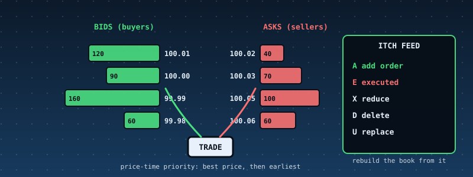

51. A Limit-Order-Book Matching Engine: Price-Time Priority, and a Feed in NASDAQ ITCH Format That Rebuilds the Book¶

What you will understand: how an exchange matches orders and tells the world what happened. A matching engine (051_book.h/051_book.c) with price-time priority: an incoming order trades against the best-priced resting orders first, the earliest first, at the resting order's price; the remainder of a limit order rests, the remainder of a market order vanishes. Cancel, reduce and replace. Every change is published as a binary message in the layout of NASDAQ TotalView-ITCH 5.0 (Add A, Executed E, Reduce X, Delete D, Replace U). A subscriber rebuilds the whole book from that feed alone, and the chapter's central test is that the rebuilt book has the same SHA-256 hash as the engine's own book. An independent Python engine, encoder, decoder and rebuilder reproduce everything.
What you need to know first: Chapter 30's SHA-256, Chapter 47's replay-hash idea (one deterministic function, state compared by hash), Chapters 19-23's FAT16 (the feed files are written and read back), and the cumulative kernel.
Scope: three confirmed choices before writing any code¶
Third of the four case studies requested together. One AskUserQuestion round: core "Matching engine + ITCH feed" (recommended; self-trade prevention, IOC/FOK and book-reconstruction-only were offered and not chosen); data "Real ITCH samples if found + generated streams"; hardening "Full discipline".
Where the data comes from, said plainly¶
No real ITCH data was found. NASDAQ's sample files are large and are not reachable from the sandbox; the one open-source ITCH reader found on GitHub (charles-cooper/itch-order-book, commit 095ac97ef46c72411a62dd9148d96d2e3ace3305, BSD 3-clause) carries only message layouts, no sample data. It was used for one thing: cross-checking the byte offsets and lengths of the message layouts (Add Order 36 bytes with the order id at offset 11, side at 19, shares at 20, price at 32; Executed 31; Reduce 23; Delete 19; Replace 35). So every byte of feed in this chapter was produced by this chapter's engine, and every order is synthetic: a hand-written 21-command scenario and 1,200 commands of random order flow (native/gen_flow.py 51 1200). The feed's format follows the published ITCH 5.0 layouts as read from that header and the author's knowledge of the specification; it was not validated against a real NASDAQ file.
What the engine does and does not do¶
One symbol (ACME), integer prices in 1/10,000 dollar, integer quantities (at most 1,000,000), a book of at most 1,024 resting orders, 48-bit nanosecond time stamps supplied by the caller that must not go backwards.
- Match. A buy trades against the lowest asks at or below its limit (any ask for a market order); a sell against the highest bids at or above its limit. Within a price, the earliest arrival first. The trade price is the resting order's price, so an aggressive order gets price improvement.
- Rest. The unfilled remainder of a limit order joins the queue at its price (an
Amessage). A market order's remainder is discarded. - Cancel (
D), reduce (X, partial cancel that keeps queue position; reducing to zero is refused, use cancel), replace (cancel-and-new: queue position is lost even at the same price; a replace whose new price would cross trades like a new order, published asD,E...,Awith noU; otherwiseU). - Refusals (each leaves the book and the feed untouched):
qty,price,dup-id,unknown-id,time,reduce,full. - Not covered: several symbols, IOC/FOK/stop/iceberg orders, self-trade prevention, auctions and crosses, order-entry protocols, fees. Real exchanges differ in many details (for example in how a replace affects priority).
ITCH is an output feed. It describes what happened to resting orders: there is no message for an aggressive order and no price on an execution (the price is the resting order's). That is exactly why a subscriber can rebuild the book but not the incoming order flow.
The engine and subscriber: 051_book.h and 051_book.c¶
Best price is found by scanning the order table (O(n) for n at most 1,024): simple enough to read in one sitting and to compare line by line with the Python version. No libgcc in this kernel, so statistics are printed with shift-and-subtract division.
/* Chapter 51: a limit-order-book matching engine and the exchange feed it publishes. One symbol, integer prices (1/10000 dollar) and quantities, PRICE-TIME PRIORITY: an incoming order trades against the best-priced resting orders on the other
* side, the earliest first, at the RESTING order's price; what is left of a limit order rests in the book, what is left of a market order is discarded. Commands are NEW (limit or market), CANCEL, REPLACE and REDUCE.
* Every change the engine makes is published as a binary message in the layout of NASDAQ TotalView-ITCH 5.0 (the exchange-to-subscribers feed): Add Order 'A', Order Executed 'E', Order Cancel (reduce) 'X', Order Delete 'D', Order Replace 'U',
* each preceded by a 2-byte big-endian length as in NASDAQ's binary file format. ITCH is an OUTPUT feed -- it says what happened to resting orders; it has no aggressive orders and no prices on executions -- so a subscriber can REBUILD the book
* from it alone. ob_feed_apply() is that subscriber. The central test of the chapter: the book rebuilt from the feed has the same SHA-256 hash as the engine's own book, after every command.
* Priority is the order of arrival into the book; REPLACE is cancel-and-new (priority lost); a replace whose new price would cross trades like a new order. Time stamps are 48-bit nanoseconds supplied by the caller and must not go backwards.
* Not covered: several symbols, order types beyond limit and market (IOC/FOK/stop/iceberg), self-trade prevention, auctions, order-entry protocols, fees. */
#ifndef BOOK_H
#define BOOK_H
#include <stdint.h>
#define OB_MAX_ORDERS 1024
#define OB_MAX_QTY 1000000u
#define OB_MAX_TS 0xFFFFFFFFFFFFull
#define OB_MAX_TRADES 1100
enum { OB_OK = 0, OB_ERR_DUP_ID = -1, OB_ERR_QTY = -2, OB_ERR_PRICE = -3, OB_ERR_UNKNOWN = -4, OB_ERR_FULL = -5, OB_ERR_TIME = -6, OB_ERR_REDUCE = -7, OB_ERR_INVARIANT = -8, OB_ERR_FEED = -9, OB_ERR_BUFFER = -10 };
enum { OB_BUY = 0, OB_SELL = 1 };
typedef struct { uint64_t id; uint32_t price, qty, seq; uint8_t side, live; } ob_order_t;
typedef struct { uint64_t maker, taker, match; uint32_t price, qty; } ob_trade_t;
typedef struct {
ob_order_t o[OB_MAX_ORDERS]; uint32_t next_seq; uint64_t next_match, last_ts, n_trades, volume_qty, notional; uint32_t n_live;
ob_trade_t tr[OB_MAX_TRADES]; uint32_t n_tr; /* trades of the LAST command */
uint8_t *feed; uint32_t feed_cap, feed_len; /* where messages are appended (NULL: not published) */
uint32_t feed_msgs; const char *feed_err; uint32_t feed_err_msg; /* subscriber side */
} ob_t;
void ob_init(ob_t *b);
int ob_new(ob_t *b, uint64_t id, int side, uint32_t price /* 0 = market */, uint32_t qty, uint64_t ts);
int ob_cancel(ob_t *b, uint64_t id, uint64_t ts);
int ob_replace(ob_t *b, uint64_t old_id, uint64_t new_id, uint32_t price, uint32_t qty, uint64_t ts);
int ob_reduce(ob_t *b, uint64_t id, uint32_t cancel_qty, uint64_t ts);
int ob_check(const ob_t *b); /* 0 when the book is sane: not crossed, quantities positive, ids unique, counts right; else a positive code */
void ob_hash(const ob_t *b, uint8_t out[32]); /* SHA-256 over the live orders in priority order (bids best first, then asks best first): id, price, qty, side */
int ob_feed_apply(ob_t *b, const uint8_t *buf, uint32_t len); /* the subscriber: apply every message of a feed to b; OB_OK or OB_ERR_FEED (b->feed_err, b->feed_err_msg say why and where) */
int ob_levels(const ob_t *b, int side, uint32_t *price, uint64_t *qty, int max); /* aggregated price levels, best first; returns how many */
const char *ob_strerror(int rc);
#endif
/* Chapter 51: the matching engine and the feed subscriber (see 051_book.h). Freestanding. */
#include "051_book.h"
#include "051_sha256.h"
const char *ob_strerror(int rc) {
switch (rc) {
case OB_OK: return "ok"; case OB_ERR_DUP_ID: return "dup-id"; case OB_ERR_QTY: return "qty"; case OB_ERR_PRICE: return "price"; case OB_ERR_UNKNOWN: return "unknown-id"; case OB_ERR_FULL: return "full";
case OB_ERR_TIME: return "time"; case OB_ERR_REDUCE: return "reduce"; case OB_ERR_INVARIANT: return "invariant"; case OB_ERR_FEED: return "feed"; case OB_ERR_BUFFER: return "buffer";
}
return "?";
}
void ob_init(ob_t *b) {
for (uint32_t i = 0; i < OB_MAX_ORDERS; i++) { b->o[i].live = 0; b->o[i].id = 0; b->o[i].price = b->o[i].qty = b->o[i].seq = 0; b->o[i].side = 0; }
b->next_seq = 1; b->next_match = 1; b->last_ts = 0; b->n_trades = 0; b->volume_qty = 0; b->notional = 0; b->n_live = 0; b->n_tr = 0;
b->feed = 0; b->feed_cap = 0; b->feed_len = 0; b->feed_msgs = 0; b->feed_err = ""; b->feed_err_msg = 0;
}
/* ---- publishing ---- */
static void p8(uint8_t *p, uint64_t v) { for (int i = 0; i < 8; i++) { p[i] = (uint8_t)(v >> (56 - 8 * i)); } }
static void p4(uint8_t *p, uint32_t v) { for (int i = 0; i < 4; i++) { p[i] = (uint8_t)(v >> (24 - 8 * i)); } }
static void p6(uint8_t *p, uint64_t v) { for (int i = 0; i < 6; i++) { p[i] = (uint8_t)(v >> (40 - 8 * i)); } }
static uint64_t g8(const uint8_t *p) { uint64_t v = 0; for (int i = 0; i < 8; i++) { v = v << 8 | p[i]; } return v; }
static uint32_t g4(const uint8_t *p) { return (uint32_t)p[0] << 24 | (uint32_t)p[1] << 16 | (uint32_t)p[2] << 8 | p[3]; }
static uint64_t g6(const uint8_t *p) { uint64_t v = 0; for (int i = 0; i < 6; i++) { v = v << 8 | p[i]; } return v; }
static uint8_t *emit(ob_t *b, uint8_t type, uint16_t len, uint64_t ts) { /* header: 2-byte length, type, stock locate 1, tracking 0, 6-byte time; returns the body pointer after it or NULL */
if (!b->feed) { static uint8_t scratch[64]; uint8_t *p = scratch; p[0] = 0; p[1] = (uint8_t)len; p[2] = type; p[3] = 0; p[4] = 1; p[5] = 0; p[6] = 0; p6(p + 7, ts); return p + 13; }
if (b->feed_len + 2u + len > b->feed_cap) { return 0; }
uint8_t *p = b->feed + b->feed_len; b->feed_len += 2u + len; b->feed_msgs++;
p[0] = (uint8_t)(len >> 8); p[1] = (uint8_t)len; p[2] = type; p[3] = 0; p[4] = 1; p[5] = 0; p[6] = 0; p6(p + 7, ts); return p + 13;
}
static int pub_add(ob_t *b, uint64_t ts, uint64_t id, int side, uint32_t qty, uint32_t price) {
uint8_t *p = emit(b, 'A', 36, ts); if (!p) { return OB_ERR_BUFFER; }
p8(p, id); p[8] = side == OB_BUY ? 'B' : 'S'; p4(p + 9, qty); for (int i = 0; i < 8; i++) { p[13 + i] = "ACME "[i]; } p4(p + 21, price); return OB_OK;
}
static int pub_exec(ob_t *b, uint64_t ts, uint64_t id, uint32_t qty, uint64_t match) { uint8_t *p = emit(b, 'E', 31, ts); if (!p) { return OB_ERR_BUFFER; } p8(p, id); p4(p + 8, qty); p8(p + 12, match); return OB_OK; }
static int pub_reduce(ob_t *b, uint64_t ts, uint64_t id, uint32_t qty) { uint8_t *p = emit(b, 'X', 23, ts); if (!p) { return OB_ERR_BUFFER; } p8(p, id); p4(p + 8, qty); return OB_OK; }
static int pub_delete(ob_t *b, uint64_t ts, uint64_t id) { uint8_t *p = emit(b, 'D', 19, ts); if (!p) { return OB_ERR_BUFFER; } p8(p, id); return OB_OK; }
static int pub_replace(ob_t *b, uint64_t ts, uint64_t old_id, uint64_t new_id, uint32_t qty, uint32_t price) { uint8_t *p = emit(b, 'U', 35, ts); if (!p) { return OB_ERR_BUFFER; } p8(p, old_id); p8(p + 8, new_id); p4(p + 16, qty); p4(p + 20, price); return OB_OK; }
static int find(const ob_t *b, uint64_t id) { for (uint32_t i = 0; i < OB_MAX_ORDERS; i++) { if (b->o[i].live && b->o[i].id == id) { return (int)i; } } return -1; }
static int free_slot(const ob_t *b) { for (uint32_t i = 0; i < OB_MAX_ORDERS; i++) { if (!b->o[i].live) { return (int)i; } } return -1; }
static int best(const ob_t *b, int side) { /* best resting order on `side`: bids highest price, asks lowest; ties earliest */
int k = -1;
for (uint32_t i = 0; i < OB_MAX_ORDERS; i++) {
const ob_order_t *o = &b->o[i]; if (!o->live || o->side != side) { continue; }
if (k < 0) { k = (int)i; continue; }
const ob_order_t *c = &b->o[k]; int better = side == OB_BUY ? (o->price > c->price) : (o->price < c->price);
if (better || (o->price == c->price && o->seq < c->seq)) { k = (int)i; }
}
return k;
}
static int crosses(const ob_t *b, int side, uint32_t price) { int k = best(b, side == OB_BUY ? OB_SELL : OB_BUY); if (k < 0) { return 0; } return price == 0 || (side == OB_BUY ? b->o[k].price <= price : b->o[k].price >= price); }
static int check_ts(ob_t *b, uint64_t ts) { if (ts > OB_MAX_TS || ts < b->last_ts) { return OB_ERR_TIME; } return OB_OK; }
static int match_and_rest(ob_t *b, uint64_t id, int side, uint32_t price, uint32_t qty, uint64_t ts) {
uint32_t left = qty;
while (left > 0) {
int k = best(b, side == OB_BUY ? OB_SELL : OB_BUY); if (k < 0) { break; }
ob_order_t *m = &b->o[k]; if (price != 0 && (side == OB_BUY ? m->price > price : m->price < price)) { break; }
uint32_t q = left < m->qty ? left : m->qty; uint64_t mn = b->next_match++;
ob_trade_t *t = &b->tr[b->n_tr++]; t->maker = m->id; t->taker = id; t->price = m->price; t->qty = q; t->match = mn;
int rc = pub_exec(b, ts, m->id, q, mn); if (rc) { return rc; }
m->qty -= q; left -= q; b->n_trades++; b->volume_qty += q; b->notional += (uint64_t)m->price * q;
if (m->qty == 0) { m->live = 0; b->n_live--; }
}
if (left > 0 && price != 0) {
int s = free_slot(b); if (s < 0) { return OB_ERR_FULL; }
ob_order_t *o = &b->o[s]; o->id = id; o->price = price; o->qty = left; o->side = (uint8_t)side; o->live = 1; o->seq = b->next_seq++; b->n_live++;
int rc = pub_add(b, ts, id, side, left, price); if (rc) { return rc; }
}
return OB_OK;
}
int ob_new(ob_t *b, uint64_t id, int side, uint32_t price, uint32_t qty, uint64_t ts) {
b->n_tr = 0;
if (qty == 0 || qty > OB_MAX_QTY) { return OB_ERR_QTY; }
if (id == 0 || find(b, id) >= 0) { return OB_ERR_DUP_ID; }
int rc = check_ts(b, ts); if (rc) { return rc; }
if (price != 0 && free_slot(b) < 0 && !crosses(b, side, price)) { return OB_ERR_FULL; } /* a limit order that cannot trade and cannot rest */
if (price != 0 && free_slot(b) < 0) { /* it will trade; it may then have a remainder with nowhere to rest: refuse up front unless it fills completely */
uint32_t avail = 0; for (uint32_t i = 0; i < OB_MAX_ORDERS; i++) { const ob_order_t *o = &b->o[i]; if (o->live && o->side != side && (side == OB_BUY ? o->price <= price : o->price >= price)) { avail += o->qty > qty ? qty : o->qty; if (avail >= qty) { break; } } }
if (avail < qty) { return OB_ERR_FULL; }
}
b->last_ts = ts; rc = match_and_rest(b, id, side, price, qty, ts); if (rc) { return rc; }
return ob_check(b) ? OB_ERR_INVARIANT : OB_OK;
}
int ob_cancel(ob_t *b, uint64_t id, uint64_t ts) {
b->n_tr = 0; int k = find(b, id); if (k < 0) { return OB_ERR_UNKNOWN; } int rc = check_ts(b, ts); if (rc) { return rc; }
b->last_ts = ts; b->o[k].live = 0; b->n_live--; rc = pub_delete(b, ts, id); if (rc) { return rc; } return ob_check(b) ? OB_ERR_INVARIANT : OB_OK;
}
int ob_reduce(ob_t *b, uint64_t id, uint32_t cq, uint64_t ts) {
b->n_tr = 0; int k = find(b, id); if (k < 0) { return OB_ERR_UNKNOWN; } if (cq == 0 || cq >= b->o[k].qty) { return OB_ERR_REDUCE; } int rc = check_ts(b, ts); if (rc) { return rc; }
b->last_ts = ts; b->o[k].qty -= cq; rc = pub_reduce(b, ts, id, cq); if (rc) { return rc; } return ob_check(b) ? OB_ERR_INVARIANT : OB_OK;
}
int ob_replace(ob_t *b, uint64_t old_id, uint64_t new_id, uint32_t price, uint32_t qty, uint64_t ts) {
b->n_tr = 0; int k = find(b, old_id); if (k < 0) { return OB_ERR_UNKNOWN; } if (qty == 0 || qty > OB_MAX_QTY) { return OB_ERR_QTY; } if (price == 0) { return OB_ERR_PRICE; }
if (new_id == 0 || (new_id != old_id && find(b, new_id) >= 0)) { return OB_ERR_DUP_ID; } int rc = check_ts(b, ts); if (rc) { return rc; }
int side = b->o[k].side; b->last_ts = ts;
/* would the new order trade against the book (not counting the order being replaced, which is on the same side)? */
if (crosses(b, side, price)) {
b->o[k].live = 0; b->n_live--; rc = pub_delete(b, ts, old_id); if (rc) { return rc; }
rc = match_and_rest(b, new_id, side, price, qty, ts); if (rc) { return rc; }
} else {
rc = pub_replace(b, ts, old_id, new_id, qty, price); if (rc) { return rc; }
b->o[k].id = new_id; b->o[k].price = price; b->o[k].qty = qty; b->o[k].seq = b->next_seq++;
}
return ob_check(b) ? OB_ERR_INVARIANT : OB_OK;
}
int ob_check(const ob_t *b) {
uint32_t live = 0; int bb = best(b, OB_BUY), ba = best(b, OB_SELL);
for (uint32_t i = 0; i < OB_MAX_ORDERS; i++) { if (!b->o[i].live) { continue; } live++; if (b->o[i].qty == 0 || b->o[i].price == 0) { return 1; } for (uint32_t j = i + 1; j < OB_MAX_ORDERS; j++) { if (b->o[j].live && b->o[j].id == b->o[i].id) { return 2; } } }
if (live != b->n_live) { return 3; }
if (bb >= 0 && ba >= 0 && b->o[bb].price >= b->o[ba].price) { return 4; }
return 0;
}
static int before(const ob_t *b, uint32_t x, uint32_t y) { const ob_order_t *a = &b->o[x], *c = &b->o[y]; if (a->side != c->side) { return a->side == OB_BUY; } if (a->price != c->price) { return a->side == OB_BUY ? a->price > c->price : a->price < c->price; } return a->seq < c->seq; }
void ob_hash(const ob_t *b, uint8_t out[32]) {
static uint16_t idx[OB_MAX_ORDERS]; static uint8_t buf[OB_MAX_ORDERS * 17 + 4]; uint32_t n = 0;
for (uint32_t i = 0; i < OB_MAX_ORDERS; i++) { if (!b->o[i].live) { continue; } uint32_t j = n++; while (j > 0 && before(b, i, idx[j - 1])) { idx[j] = idx[j - 1]; j--; } idx[j] = (uint16_t)i; }
uint32_t o = 0; p4(buf, n); o = 4;
for (uint32_t k = 0; k < n; k++) { const ob_order_t *x = &b->o[idx[k]]; p8(buf + o, x->id); p4(buf + o + 8, x->price); p4(buf + o + 12, x->qty); buf[o + 16] = x->side; o += 17; }
sha256_hash(buf, o, out);
}
int ob_levels(const ob_t *b, int side, uint32_t *price, uint64_t *qty, int max) {
static uint16_t idx[OB_MAX_ORDERS]; uint32_t n = 0; int lv = 0;
for (uint32_t i = 0; i < OB_MAX_ORDERS; i++) { if (!b->o[i].live || b->o[i].side != side) { continue; } uint32_t j = n++; while (j > 0 && before(b, i, idx[j - 1])) { idx[j] = idx[j - 1]; j--; } idx[j] = (uint16_t)i; }
for (uint32_t k = 0; k < n; k++) { const ob_order_t *x = &b->o[idx[k]]; if (lv > 0 && price[lv - 1] == x->price) { qty[lv - 1] += x->qty; } else if (lv < max) { price[lv] = x->price; qty[lv] = x->qty; lv++; } }
return lv;
}
/* ---- the subscriber ---- */
#define FEED_FAIL(msg) do { b->feed_err = (msg); b->feed_err_msg = nmsg; return OB_ERR_FEED; } while (0)
int ob_feed_apply(ob_t *b, const uint8_t *buf, uint32_t len) {
uint32_t pos = 0, nmsg = 0; b->feed_err = ""; b->feed_err_msg = 0;
while (pos < len) {
nmsg++; if (len - pos < 3) { FEED_FAIL("truncated length prefix"); }
uint32_t ml = (uint32_t)buf[pos] << 8 | buf[pos + 1]; const uint8_t *m = buf + pos + 2; if (ml > len - pos - 2) { FEED_FAIL("message runs past the end of the feed"); }
uint8_t t = m[0]; uint32_t want = t == 'A' ? 36 : t == 'E' ? 31 : t == 'X' ? 23 : t == 'D' ? 19 : t == 'U' ? 35 : t == 'S' ? 12 : t == 'R' ? 39 : t == 'H' ? 25 : 0;
if (want == 0) { FEED_FAIL("unknown message type"); } if (ml != want) { FEED_FAIL("wrong length for the message type"); }
pos += 2 + ml; if (t == 'S' || t == 'R' || t == 'H') { continue; }
if (m[1] != 0 || m[2] != 1) { FEED_FAIL("stock locate is not 1"); } uint64_t ts = g6(m + 5); if (ts < b->last_ts) { FEED_FAIL("time goes backwards"); } b->last_ts = ts;
if (t == 'A') {
uint64_t id = g8(m + 11); uint8_t sd = m[19]; uint32_t q = g4(m + 20), pr = g4(m + 32); if (sd != 'B' && sd != 'S') { FEED_FAIL("side is not B or S"); } if (q == 0 || q > OB_MAX_QTY) { FEED_FAIL("add with a bad quantity"); } if (pr == 0) { FEED_FAIL("add with price 0"); }
if (id == 0 || find(b, id) >= 0) { FEED_FAIL("add of an order id that is already live"); } for (int i = 0; i < 8; i++) { if (m[24 + i] != (uint8_t)"ACME "[i]) { FEED_FAIL("unexpected stock symbol"); } }
int s = free_slot(b); if (s < 0) { FEED_FAIL("order table full"); }
ob_order_t *o = &b->o[s]; o->id = id; o->price = pr; o->qty = q; o->side = sd == 'B' ? OB_BUY : OB_SELL; o->live = 1; o->seq = b->next_seq++; b->n_live++;
} else if (t == 'E') {
int k = find(b, g8(m + 11)); uint32_t q = g4(m + 19); if (k < 0) { FEED_FAIL("execution of an unknown order"); } if (q == 0 || q > b->o[k].qty) { FEED_FAIL("execution larger than the remaining quantity"); }
if (g8(m + 23) != b->next_match) { FEED_FAIL("match number out of sequence"); }
b->next_match++; b->o[k].qty -= q; b->n_trades++; b->volume_qty += q; b->notional += (uint64_t)b->o[k].price * q; if (b->o[k].qty == 0) { b->o[k].live = 0; b->n_live--; }
} else if (t == 'X') {
int k = find(b, g8(m + 11)); uint32_t q = g4(m + 19); if (k < 0) { FEED_FAIL("reduce of an unknown order"); } if (q == 0 || q >= b->o[k].qty) { FEED_FAIL("reduce by zero or by the whole quantity"); } b->o[k].qty -= q;
} else if (t == 'D') {
int k = find(b, g8(m + 11)); if (k < 0) { FEED_FAIL("delete of an unknown order"); } b->o[k].live = 0; b->n_live--;
} else { /* 'U' */
int k = find(b, g8(m + 11)); uint64_t nid = g8(m + 19); uint32_t q = g4(m + 27), pr = g4(m + 31); if (k < 0) { FEED_FAIL("replace of an unknown order"); } if (q == 0 || q > OB_MAX_QTY || pr == 0) { FEED_FAIL("replace with a bad quantity or price"); }
if (nid == 0 || (nid != b->o[k].id && find(b, nid) >= 0)) { FEED_FAIL("replace to an id that is already live"); } b->o[k].id = nid; b->o[k].qty = q; b->o[k].price = pr; b->o[k].seq = b->next_seq++;
}
if (ob_check(b)) { FEED_FAIL("the book is crossed or inconsistent after this message"); }
}
return OB_OK;
}
The data: gen_flow.py, 051_bookdata_data.asm¶
#!/usr/bin/env python3
"""Chapter 51: random order flow for the tests: gen(seed, n) -> command text. A random-walk mid price near $100.00, limit orders on both sides close enough to cross often, market orders, cancels (some of orders that no longer exist), replaces (some crossing),
reduces, and a few deliberately INVALID commands (zero quantity, duplicate id, quantity over the limit, price 0 on a replace, a time stamp that goes backwards). Prices are in 1/10000 dollar, ticks of one cent."""
import random, sys
def gen(seed, n=300, hot=False):
R = random.Random(seed); mid = 1000000; ts = 1000; nid = 1; live = []; out = []
for _ in range(n):
ts += R.choice([0, 1, 1, 5, 1000]); mid = max(1000, mid + R.choice([-200, -100, 0, 0, 100, 200])); k = R.random(); spread = R.choice([100, 200, 300, 500, 1000, 5000])
if k < .45:
side = R.choice("BS"); px = mid + (-1 if side == "B" else 1) * R.choice([-300, -100, 0, 100, 200, 400, 1000]) ; px = max(100, px - px % 100); q = R.choice([1, 5, 10, 100, 100, 250, R.randrange(1, 2000)])
out.append(f"N {nid} {side} {px} {q} {ts}"); live.append(nid); nid += 1
elif k < .53: out.append(f"N {nid} {R.choice('BS')} 0 {R.choice([1, 50, 500, 3000])} {ts}"); nid += 1
elif k < .70 and live: i = R.choice(live); out.append(f"C {i} {ts}"); live.remove(i) if R.random() < .7 else None
elif k < .74: out.append(f"C {nid + 5000} {ts}")
elif k < .84 and live: i = R.choice(live); px = max(100, mid + R.choice([-500, -100, 0, 100, 500, 2000, -2000])); px -= px % 100; out.append(f"R {i} {nid} {px} {R.choice([1, 10, 100, 700])} {ts}"); live.append(nid); nid += 1
elif k < .92 and live: out.append(f"X {R.choice(live)} {R.choice([1, 2, 5, 50, 100000])} {ts}")
else:
bad = R.choice(["qty0", "dup", "big", "price0", "back", "badreplace", "timeback_cancel"])
if bad == "qty0": out.append(f"N {nid} B {mid} 0 {ts}"); nid += 1
elif bad == "dup" and live: out.append(f"N {R.choice(live)} S {mid} 5 {ts}")
elif bad == "big": out.append(f"N {nid} B {mid} 1000001 {ts}"); nid += 1
elif bad == "price0" and live: out.append(f"R {R.choice(live)} {nid} 0 5 {ts}"); nid += 1
elif bad == "back": out.append(f"N {nid} S {mid + 100} 5 {max(0, ts - 50)}"); nid += 1
elif bad == "badreplace" and live and len(live) > 1: out.append(f"R {live[0]} {live[1]} {mid} 5 {ts}")
elif live: out.append(f"C {live[0]} {max(0, ts - 7)}")
return "\n".join(out) + "\n"
if __name__ == "__main__": sys.stdout.write(gen(int(sys.argv[1]), int(sys.argv[2]) if len(sys.argv) > 2 else 300))
; Chapter 51: the two command streams the demo runs, baked into the kernel image with NASM's incbin (paths relative to the chapter's code directory). data/book/demo.txt is written by hand; data/book/flow.txt is generated (native/gen_flow.py 51 1200): SYNTHETIC order flow.
BITS 32
section .rodata
global book_demo_start, book_demo_end, book_flow_start, book_flow_end
book_demo_start: incbin "data/book/demo.txt"
book_demo_end:
book_flow_start: incbin "data/book/flow.txt"
book_flow_end:
The hand-written scenario (data/book/demo.txt; N id side price qty time, C id time, R old new price qty time, X id qty time; price 0 = market):
N 1 S 1000100 100 1000
N 2 S 1000100 50 1010
N 3 S 1000200 80 1020
N 4 B 999900 100 1030
N 5 B 999800 60 1040
N 6 B 1000100 120 1050
X 3 30 1060
R 5 15 1000000 60 1070
N 7 S 0 90 1080
C 4 1090
R 3 13 999900 50 1100
N 8 B 1000200 100 1110
C 99 1120
N 9 S 1000000 40 1130
N 10 B 0 200 1140
N 11 B 1000300 0 1150
N 8 S 1000500 10 1160
N 12 S 1000300 25 1170
N 13 B 1000300 25 1180
C 15 1190
X 12 5 1200
051_kmain.c: the order-book demo¶
/* =====================================================================================================================
* Chapter 51: the order-book demo. (1) A hand-written 21-command scenario against an empty book: limit orders that rest, cross and sweep, a market order, a cancel, a reduce, replaces (one crossing), and refusals; for every command the verdict, the trades
* and the ITCH feed bytes it produced, then the final book. (2) The book REBUILT from that feed alone has the same SHA-256 hash as the engine's book. (3) 1,200 commands of SYNTHETIC random order flow, run twice (replay gives the same hash), the feed written to
* the FAT16 disk and read back, rebuilt from the disk copy. (4) Six damaged feeds refused by the subscriber. Canonical text of (1) and (3) is printed between @@ markers for verify_051.py. */
extern const char book_demo_start[], book_demo_end[], book_flow_start[], book_flow_end[];
static ob_t g_eng, g_sub;
static uint8_t g_feed[65536], g_feed2[65536], g_dmg[65536];
static uint32_t g_bk_cmds, g_bk_trades_total, g_bk_files, g_bk_refused;
static void bk_hex(const uint8_t *p, uint32_t n) { static const char H[] = "0123456789abcdef"; for (uint32_t i = 0; i < n; i++) { kprintf("%c%c", H[p[i] >> 4], H[p[i] & 15]); } }
static void bk_u64(uint64_t v) { char t[24]; int n = 0; uint32_t r; if (v == 0) { t[n++] = '0'; } while (v) { uint64_t q = 0, rem = 0; for (int i = 63; i >= 0; i--) { rem = (rem << 1) | ((v >> i) & 1u); if (rem >= 10) { rem -= 10; q |= 1ull << i; } } r = (uint32_t)rem; v = q; t[n++] = (char)('0' + r); } while (n) { kprintf("%c", t[--n]); } }
static const char *bk_next(const char *p, const char *end, uint64_t *v) { while (p < end && (*p == ' ')) { p++; } uint64_t x = 0; while (p < end && *p >= '0' && *p <= '9') { x = x * 10 + (uint64_t)(*p - '0'); p++; } *v = x; return p; }
static void bk_dump(const ob_t *b) {
static uint32_t pr[OB_MAX_ORDERS]; static uint64_t q[OB_MAX_ORDERS];
for (int s = 0; s < 2; s++) { int n = ob_levels(b, s, pr, q, OB_MAX_ORDERS); for (int i = 0; i < n; i++) { kprintf("%s %u ", s ? "ask" : "bid", pr[i]); bk_u64(q[i]); kprintf("\n"); } }
uint8_t h[32]; ob_hash(b, h); kprintf("hash "); bk_hex(h, 32); kprintf("\nstats trades "); bk_u64(b->n_trades); kprintf(" volume "); bk_u64(b->volume_qty); kprintf(" notional "); bk_u64(b->notional); kprintf(" live %u\n", b->n_live);
}
/* run a command stream; verbose = print the canonical per-command lines; returns the number of commands */
static uint32_t bk_run(ob_t *e, const char *p, const char *end, int verbose, uint32_t *refused) {
uint32_t n = 0;
while (p < end) {
while (p < end && (*p == '\n' || *p == ' ')) { p++; }
if (p >= end) { break; }
char c = *p++; uint64_t a = 0, b2 = 0, pr = 0, q = 0, ts = 0; int rc = 0; uint32_t before = e->feed_len; char sd = 'B';
if (c == 'N') { p = bk_next(p, end, &a); while (*p == ' ') { p++; } sd = *p++; p = bk_next(p, end, &pr); p = bk_next(p, end, &q); p = bk_next(p, end, &ts); rc = ob_new(e, a, sd == 'B' ? OB_BUY : OB_SELL, (uint32_t)pr, (uint32_t)q, ts); }
else if (c == 'C') { p = bk_next(p, end, &a); p = bk_next(p, end, &ts); rc = ob_cancel(e, a, ts); }
else if (c == 'R') { p = bk_next(p, end, &a); p = bk_next(p, end, &b2); p = bk_next(p, end, &pr); p = bk_next(p, end, &q); p = bk_next(p, end, &ts); rc = ob_replace(e, a, b2, (uint32_t)pr, (uint32_t)q, ts); }
else if (c == 'X') { p = bk_next(p, end, &a); p = bk_next(p, end, &q); p = bk_next(p, end, &ts); rc = ob_reduce(e, a, (uint32_t)q, ts); }
else { while (p < end && *p != '\n') { p++; } continue; }
n++; if (rc) { (*refused)++; }
if (verbose) {
kprintf("cmd %u %s\n", n, rc ? ob_strerror(rc) : "ok");
for (uint32_t i = 0; i < e->n_tr; i++) { kprintf("trade "); bk_u64(e->tr[i].maker); kprintf(" "); bk_u64(e->tr[i].taker); kprintf(" %u %u ", e->tr[i].price, e->tr[i].qty); bk_u64(e->tr[i].match); kprintf("\n"); }
if (e->feed_len > before) { kprintf("feed "); bk_hex(e->feed + before, e->feed_len - before); kprintf("\n"); }
}
g_bk_trades_total += e->n_tr;
}
return n;
}
static int bk_same(const ob_t *a, const ob_t *b) { uint8_t x[32], y[32]; ob_hash(a, x); ob_hash(b, y); for (int i = 0; i < 32; i++) { if (x[i] != y[i]) { return 0; } } return 1; }
static void bk_top(const ob_t *b) {
static uint32_t pr[4]; static uint64_t q[4]; int nb = ob_levels(b, OB_BUY, pr, q, 1); uint32_t bp = nb ? pr[0] : 0; uint64_t bq = nb ? q[0] : 0; int na = ob_levels(b, OB_SELL, pr, q, 1);
kprintf(" best bid "); if (nb) { bk_u64(bq); kprintf(" @ %u", bp); } else { kprintf("-"); } kprintf(" best ask "); if (na) { bk_u64(q[0]); kprintf(" @ %u", pr[0]); } else { kprintf("-"); } kprintf("\n");
}
static void bk_write(const char *name, const uint8_t *d, uint32_t n, const char *what) {
int wrote = fat16_create_file(name, d, n, 0); static uint8_t back[65536]; uint32_t got = 0; int same = wrote && fat16_read_file(name, back, sizeof back, &got) && got == n;
for (uint32_t i = 0; same && i < n; i++) { if (back[i] != d[i]) { same = 0; } }
kprintf(" %s written to the FAT16 disk as %s (%u bytes), read back identical: %s\n", what, name, (unsigned)n, same ? "YES" : "NO (BUG)"); if (same) { g_bk_files++; }
}
static void orderbook_demo(void) {
kprintf("\nStarting this chapter's own order-book demo (price-time matching engine publishing an ITCH-style feed)...\n");
__asm__ volatile ("cli"); /* as in Chapters 49-50: no timer-tick line inside a canonical block */
fat16_format();
if (!fat16_init()) { kprintf("FATAL: fat16_init() failed on the fresh volume (BUG)\n"); return; }
kprintf("A fresh FAT16 volume was formatted to hold the feed files.\n");
kprintf("\n== Part 1. A hand-written scenario: 21 commands against an empty book (prices are in 1/10000 dollar: 1000100 is $100.0100)\n");
ob_init(&g_eng); g_eng.feed = g_feed; g_eng.feed_cap = sizeof g_feed; uint32_t refused = 0;
kprintf("@@BOOK DEMO BEGIN\n");
uint32_t nd = bk_run(&g_eng, book_demo_start, book_demo_end, 1, &refused);
bk_dump(&g_eng);
ob_init(&g_sub); int rc = ob_feed_apply(&g_sub, g_feed, g_eng.feed_len);
kprintf("rebuilt %s %s\n@@BOOK DEMO END\n", rc ? "REFUSED" : "ok", !rc && bk_same(&g_eng, &g_sub) ? "same-hash" : "DIFFERENT");
kprintf(" %u commands, %u refused, %u feed bytes in %u messages\n", (unsigned)nd, (unsigned)refused, (unsigned)g_eng.feed_len, (unsigned)g_eng.feed_msgs);
bk_write("DEMO.ITC", g_feed, g_eng.feed_len, "the demo feed");
uint32_t demo_len = g_eng.feed_len; for (uint32_t i = 0; i < demo_len; i++) { g_feed2[i] = g_feed[i]; }
kprintf("\n The same scenario, step by step, with the top of the book after each command:\n");
{ ob_t *e = &g_eng; ob_init(e); e->feed = 0; const char *p = book_demo_start; uint32_t k = 0; uint32_t rf = 0;
while (p < book_demo_end) { const char *ln = p; while (p < book_demo_end && *p != '\n') { p++; } uint32_t l = (uint32_t)(p - ln); if (p < book_demo_end) { p++; } if (l == 0) { continue; } k++;
uint32_t before = (uint32_t)e->n_trades; (void)bk_run(e, ln, ln + l, 0, &rf); kprintf(" %u ", (unsigned)k); for (uint32_t i = 0; i < l; i++) { kprintf("%c", ln[i]); } kprintf(" -> %u trade(s)\n", (unsigned)(e->n_trades - before)); bk_top(e); } }
kprintf("\n== Part 2. 1,200 commands of SYNTHETIC random order flow (a random-walk price near $100, limit and market orders, cancels, replaces, reduces and some invalid commands)\n");
ob_init(&g_eng); g_eng.feed = g_feed; g_eng.feed_cap = sizeof g_feed; refused = 0; g_bk_trades_total = 0; uint32_t nf = bk_run(&g_eng, book_flow_start, book_flow_end, 0, &refused); uint32_t flow_trades = g_bk_trades_total;
kprintf("@@BOOK FLOW BEGIN\n"); bk_dump(&g_eng);
ob_init(&g_sub); rc = ob_feed_apply(&g_sub, g_feed, g_eng.feed_len);
kprintf("rebuilt %s %s\n@@BOOK FLOW END\n", rc ? "REFUSED" : "ok", !rc && bk_same(&g_eng, &g_sub) ? "same-hash" : "DIFFERENT");
kprintf(" %u commands: %u refused (bad quantity, duplicate or unknown id, time going back, ...), %u trades, %u feed messages (%u bytes)\n", (unsigned)nf, (unsigned)refused, (unsigned)flow_trades, (unsigned)g_eng.feed_msgs, (unsigned)g_eng.feed_len);
uint8_t h1[32], h2[32]; ob_hash(&g_eng, h1); ob_init(&g_sub); g_sub.feed = g_feed2 + 0; g_sub.feed_cap = 0; g_sub.feed = 0; uint32_t r2 = 0; (void)bk_run(&g_sub, book_flow_start, book_flow_end, 0, &r2); ob_hash(&g_sub, h2);
int same = 1; for (int i = 0; i < 32; i++) { if (h1[i] != h2[i]) { same = 0; } }
kprintf(" replaying the same 1,200 commands from scratch gives the same book hash: %s\n", same ? "YES (the engine is deterministic)" : "NO (BUG)");
bk_write("FLOW.ITC", g_feed, g_eng.feed_len, "the flow feed"); static ob_t sub2; static uint8_t back2[65536]; uint32_t got = 0; int ok = fat16_read_file("FLOW.ITC", back2, sizeof back2, &got); ob_init(&sub2); rc = ok ? ob_feed_apply(&sub2, back2, got) : -1;
kprintf(" the book rebuilt from the copy READ BACK FROM DISK: %s\n", !rc && bk_same(&g_eng, &sub2) ? "same hash as the engine's book" : "DIFFERENT (BUG)");
kprintf("\n== Part 3. Six damaged copies of the demo feed (%u bytes). The subscriber must refuse each one and say why and where.\n", (unsigned)demo_len);
{ static const char *WHAT[6] = {"one message's type byte changed to Z", "a message's length byte changed", "an Execute whose quantity is raised above what the order has left", "the first Add deleted (so its Execute names an unknown order)", "the feed cut off in the middle of a message", "the second Add given a price above the best ask (a crossed book)"};
for (int k = 0; k < 6; k++) { uint32_t dl = demo_len; for (uint32_t i = 0; i < dl; i++) { g_dmg[i] = g_feed2[i]; }
if (k == 0) { g_dmg[2] = 'Z'; } else if (k == 1) { g_dmg[1] = 35; }
else if (k == 2) { uint32_t pos = 0; while (pos < dl && g_dmg[pos + 2] != 'E') { pos += 2u + ((uint32_t)g_dmg[pos] << 8 | g_dmg[pos + 1]); } if (pos < dl) { g_dmg[pos + 2 + 19] = 0xff; } }
else if (k == 3) { for (uint32_t i = 38; i < dl; i++) { g_dmg[i - 38] = g_dmg[i]; } dl -= 38; }
else if (k == 4) { dl = dl - 7; }
else { uint32_t pos = 0; int adds = 0; while (pos < dl) { if (g_dmg[pos + 2] == 'A' && g_dmg[pos + 2 + 19] == 'B' && ++adds == 1) { g_dmg[pos + 2 + 32] = 0x00; g_dmg[pos + 2 + 33] = 0x20; g_dmg[pos + 2 + 34] = 0x00; g_dmg[pos + 2 + 35] = 0x00; break; } pos += 2u + ((uint32_t)g_dmg[pos] << 8 | g_dmg[pos + 1]); } }
ob_init(&g_sub); int r = ob_feed_apply(&g_sub, g_dmg, dl);
kprintf(" Attack %d: %s\n -> %s", k + 1, WHAT[k], r == OB_ERR_FEED ? "REFUSED" : "accepted (BUG)"); if (r == OB_ERR_FEED) { kprintf(" at message %u: %s", (unsigned)g_sub.feed_err_msg, g_sub.feed_err); g_bk_refused++; } kprintf("\n"); } }
kprintf("\nChapter 51 order book demo complete: %u scenario commands, %u flow commands, %u trades in the flow, %u feed files written and read back identical, %u damaged feeds refused\n", (unsigned)nd, (unsigned)nf, (unsigned)flow_trades, (unsigned)g_bk_files, (unsigned)g_bk_refused);
}
Building and booting it, for real¶
#!/bin/sh
# Usage: build.sh PREFIX [OUTDIR] e.g. build.sh 046 (run inside the chapter's code directory)
# Builds the cumulative kernel for one chapter: assembles every .asm, compiles every .c with the flags Chapter 1 introduced, links with PREFIX_linker.ld, builds the ring-3 user program as a
# separate ELF (boot module "user_program"), checks Multiboot2, and packs a GRUB ISO. Boot it with run.sh.
set -e
P=${1:?prefix}; OUT=${2:-build}; mkdir -p "$OUT/iso/boot/grub"
echo "=== Assembling ASM ==="
for f in ${P}_*.asm; do nasm -f elf32 "$f" -o "$OUT/$(basename "$f" .asm).o"; done
echo "=== Compiling C ==="
for f in ${P}_*.c; do [ "$f" = "${P}_user_program.c" ] && continue; gcc -m32 -ffreestanding -fno-stack-protector -fno-pic -Wall -Wextra -c "$f" -o "$OUT/$(basename "$f" .c).o"; done
echo "=== Linking kernel ==="
ld -m elf_i386 -T ${P}_linker.ld -o "$OUT/kernel.bin" $(ls "$OUT"/*.o | grep -v "${P}_user_program.o")
echo "=== Building user program ==="
gcc -m32 -ffreestanding -fno-stack-protector -fno-pic -c ${P}_user_program.c -o "$OUT/${P}_user_program.o"
ld -m elf_i386 -T ${P}_user_program.ld -o "$OUT/user_program" "$OUT/${P}_user_program.o" 2>/dev/null
echo "=== Checking multiboot2 ==="
grub-file --is-x86-multiboot2 "$OUT/kernel.bin" && echo MULTIBOOT_OK
cp "$OUT/kernel.bin" "$OUT/iso/boot/kernel.bin"; cp "$OUT/user_program" "$OUT/iso/boot/user_program"
printf 'set timeout=0\nset default=0\n\nmenuentry "Unix OS from Scratch" {\n multiboot2 /boot/kernel.bin\n module2 /boot/user_program user_program\n boot\n}\n' > "$OUT/iso/boot/grub/grub.cfg"
echo "=== Building ISO ==="
grub-mkrescue -o "$OUT/os.iso" "$OUT/iso" 2>&1 | tail -3
echo "=== DONE ==="
#!/bin/sh
# Usage: capture.sh [OUTDIR] -- boots OUTDIR/os.iso in QEMU (8 MiB raw disk, RTL8139 card, serial to OUTDIR/serial.txt), waits until the kernel prints this chapter's completion marker, then
# stops QEMU. The disk image OUTDIR/disk.img is KEPT: after the boot it holds the FAT16 volume with the report files, which verify_051.py reads from outside the kernel.
OUT=${1:-build}; MARK="Chapter 51 order book demo complete"
rm -f "$OUT/disk.img" "$OUT/serial.txt"; qemu-img create -q -f raw "$OUT/disk.img" 8M
qemu-system-x86_64 -cdrom "$OUT/os.iso" -drive file="$OUT/disk.img",format=raw,if=ide,index=0 -serial file:"$OUT/serial.txt" -display none -no-reboot -m 64M \
-netdev user,id=n0 -device rtl8139,netdev=n0 &
PID=$!; i=0
while [ $i -lt ${WAIT:-170} ]; do
if grep -q "$MARK" "$OUT/serial.txt" 2>/dev/null; then break; fi
sleep 1; i=$((i + 1))
done
kill $PID 2>/dev/null; wait $PID 2>/dev/null
grep -q "$MARK" "$OUT/serial.txt" && echo "boot finished after about $i s: marker found" || echo "marker NOT found after $i s"
Output (cloud sandbox -- live-executed build output)
=== Assembling ASM ===
=== Compiling C ===
051_kmain.c:5992:17: warning: 'g_bk_cmds' defined but not used [-Wunused-variable]
5992 | static uint32_t g_bk_cmds, g_bk_trades_total, g_bk_files, g_bk_refused;
| ^~~~~~~~~
=== Linking kernel ===
ld: warning: build/051_usermode.o: missing .note.GNU-stack section implies executable stack
ld: NOTE: This behaviour is deprecated and will be removed in a future version of the linker
ld: warning: build/kernel.bin has a LOAD segment with RWX permissions
=== Building user program ===
=== Checking multiboot2 ===
MULTIBOOT_OK
=== Building ISO ===
Written to medium : 3090 sectors at LBA 0
Writing to 'stdio:build/os.iso' completed successfully.
=== DONE ===
Real output¶
Output (cloud sandbox -- live-executed serial capture, QEMU 8.2.2; Chapters 8-50's output elided)
Unix OS from Scratch -- Chapter 51: kernel entry reached
Multiboot2 magic confirmed in EAX: 0x36d76289
Multiboot2 memory map: 7 real entries, 24 bytes each
[... 2,407 lines of Chapters 8-50's own demos elided: this chapter's demo follows from its first line to its last ...]
Starting this chapter's own order-book demo (price-time matching engine publishing an ITCH-style feed)...
fat16_format: writing real boot sector/BPB to LBA 0...
fat16_format: zeroing 128 real FAT sectors (2 copies)...
fat16_format: zeroing 32 real root directory sectors...
fat16_format: done -- real FAT16 volume written to disk
fat16_init: real volume "UNIXOSFAT16" -- 512 bytes/sector, 1 sector(s)/cluster, 2 FAT(s) * 64 sectors, root dir 32 sectors (first at LBA 129), data starts LBA 161, 16223 usable clusters
A fresh FAT16 volume was formatted to hold the feed files.
== Part 1. A hand-written scenario: 21 commands against an empty book (prices are in 1/10000 dollar: 1000100 is $100.0100)
@@BOOK DEMO BEGIN
cmd 1 ok
feed 002441000100000000000003e80000000000000001530000006441434d4520202020000f42a4
cmd 2 ok
feed 002441000100000000000003f20000000000000002530000003241434d4520202020000f42a4
cmd 3 ok
feed 002441000100000000000003fc0000000000000003530000005041434d4520202020000f4308
cmd 4 ok
feed 002441000100000000000004060000000000000004420000006441434d4520202020000f41dc
cmd 5 ok
feed 002441000100000000000004100000000000000005420000003c41434d4520202020000f4178
cmd 6 ok
trade 1 6 1000100 100 1
trade 2 6 1000100 20 2
feed 001f450001000000000000041a0000000000000001000000640000000000000001001f450001000000000000041a0000000000000002000000140000000000000002
cmd 7 ok
feed 0017580001000000000000042400000000000000030000001e
cmd 8 ok
feed 0023550001000000000000042e0000000000000005000000000000000f0000003c000f4240
cmd 9 ok
trade 15 7 1000000 60 3
trade 4 7 999900 30 4
feed 001f4500010000000000000438000000000000000f0000003c0000000000000003001f450001000000000000043800000000000000040000001e0000000000000004
cmd 10 ok
feed 001344000100000000000004420000000000000004
cmd 11 ok
feed 0023550001000000000000044c0000000000000003000000000000000d00000032000f41dc
cmd 12 ok
trade 13 8 999900 50 5
trade 2 8 1000100 30 6
feed 001f4500010000000000000456000000000000000d000000320000000000000005001f450001000000000000045600000000000000020000001e0000000000000006002441000100000000000004560000000000000008420000001441434d4520202020000f4308
cmd 13 unknown-id
cmd 14 ok
trade 8 9 1000200 20 7
feed 001f450001000000000000046a00000000000000080000001400000000000000070024410001000000000000046a0000000000000009530000001441434d4520202020000f4240
cmd 15 ok
trade 9 10 1000000 20 8
feed 001f45000100000000000004740000000000000009000000140000000000000008
cmd 16 qty
cmd 17 ok
feed 002441000100000000000004880000000000000008530000000a41434d4520202020000f4434
cmd 18 ok
feed 00244100010000000000000492000000000000000c530000001941434d4520202020000f436c
cmd 19 ok
trade 12 13 1000300 25 9
feed 001f450001000000000000049c000000000000000c000000190000000000000009
cmd 20 unknown-id
cmd 21 unknown-id
ask 1000500 10
hash ea5c82d6919e057e60f29fe820b913624008257f8f87d24a5bcfe33db75b9895
stats trades 9 volume 355 notional 355018500 live 1
rebuilt ok same-hash
@@BOOK DEMO END
21 commands, 4 refused, 759 feed bytes in 22 messages
fat16_create_file: "DEMO.ITC" -- 759 bytes, 2 cluster(s), first cluster 2
fat16_read_file: "DEMO.ITC" -- 759 bytes read
the demo feed written to the FAT16 disk as DEMO.ITC (759 bytes), read back identical: YES
The same scenario, step by step, with the top of the book after each command:
1 N 1 S 1000100 100 1000 -> 0 trade(s)
best bid - best ask 100 @ 1000100
2 N 2 S 1000100 50 1010 -> 0 trade(s)
best bid - best ask 150 @ 1000100
3 N 3 S 1000200 80 1020 -> 0 trade(s)
best bid - best ask 150 @ 1000100
4 N 4 B 999900 100 1030 -> 0 trade(s)
best bid 100 @ 999900 best ask 150 @ 1000100
5 N 5 B 999800 60 1040 -> 0 trade(s)
best bid 100 @ 999900 best ask 150 @ 1000100
6 N 6 B 1000100 120 1050 -> 2 trade(s)
best bid 100 @ 999900 best ask 30 @ 1000100
7 X 3 30 1060 -> 0 trade(s)
best bid 100 @ 999900 best ask 30 @ 1000100
8 R 5 15 1000000 60 1070 -> 0 trade(s)
best bid 60 @ 1000000 best ask 30 @ 1000100
9 N 7 S 0 90 1080 -> 2 trade(s)
best bid 70 @ 999900 best ask 30 @ 1000100
10 C 4 1090 -> 0 trade(s)
best bid - best ask 30 @ 1000100
11 R 3 13 999900 50 1100 -> 0 trade(s)
best bid - best ask 50 @ 999900
12 N 8 B 1000200 100 1110 -> 2 trade(s)
best bid 20 @ 1000200 best ask -
13 C 99 1120 -> 0 trade(s)
best bid 20 @ 1000200 best ask -
14 N 9 S 1000000 40 1130 -> 1 trade(s)
best bid - best ask 20 @ 1000000
15 N 10 B 0 200 1140 -> 1 trade(s)
best bid - best ask -
16 N 11 B 1000300 0 1150 -> 0 trade(s)
best bid - best ask -
17 N 8 S 1000500 10 1160 -> 0 trade(s)
best bid - best ask 10 @ 1000500
18 N 12 S 1000300 25 1170 -> 0 trade(s)
best bid - best ask 25 @ 1000300
19 N 13 B 1000300 25 1180 -> 1 trade(s)
best bid - best ask 10 @ 1000500
20 C 15 1190 -> 0 trade(s)
best bid - best ask 10 @ 1000500
21 X 12 5 1200 -> 0 trade(s)
best bid - best ask 10 @ 1000500
== Part 2. 1,200 commands of SYNTHETIC random order flow (a random-walk price near $100, limit and market orders, cancels, replaces, reduces and some invalid commands)
@@BOOK FLOW BEGIN
bid 1001300 463
bid 1001200 75
bid 1001100 100
bid 1000900 100
bid 1000800 251
bid 1000400 260
bid 999900 10
bid 999800 100
ask 1009600 81
ask 1009800 5
hash 59e8de25393490ff377633a47be3c3880d336220fd3a0899520a43c867faac08
stats trades 589 volume 73591 notional 73906336200 live 13
rebuilt ok same-hash
@@BOOK FLOW END
1200 commands: 508 refused (bad quantity, duplicate or unknown id, time going back, ...), 589 trades, 1026 feed messages (35508 bytes)
replaying the same 1,200 commands from scratch gives the same book hash: YES (the engine is deterministic)
fat16_create_file: "FLOW.ITC" -- 35508 bytes, 70 cluster(s), first cluster 4
fat16_read_file: "FLOW.ITC" -- 35508 bytes read
the flow feed written to the FAT16 disk as FLOW.ITC (35508 bytes), read back identical: YES
fat16_read_file: "FLOW.ITC" -- 35508 bytes read
the book rebuilt from the copy READ BACK FROM DISK: same hash as the engine's book
== Part 3. Six damaged copies of the demo feed (759 bytes). The subscriber must refuse each one and say why and where.
Attack 1: one message's type byte changed to Z
-> REFUSED at message 1: unknown message type
Attack 2: a message's length byte changed
-> REFUSED at message 1: wrong length for the message type
Attack 3: an Execute whose quantity is raised above what the order has left
-> REFUSED at message 6: execution larger than the remaining quantity
Attack 4: the first Add deleted (so its Execute names an unknown order)
-> REFUSED at message 5: execution of an unknown order
Attack 5: the feed cut off in the middle of a message
-> REFUSED at message 22: message runs past the end of the feed
Attack 6: the second Add given a price above the best ask (a crossed book)
-> REFUSED at message 4: the book is crossed or inconsistent after this message
Chapter 51 order book demo complete: 21 scenario commands, 1200 flow commands, 589 trades in the flow, 2 feed files written and read back identical, 6 damaged feeds refused
Reading it¶
- The scenario. Commands 1-3 post three asks; 4-5 two bids; command 6 is a buy of 120 at $100.01 that takes 100 from order 1 and 20 from order 2, both at $100.01 (the earliest first), leaving 30 on the ask side. Command 8 replaces bid 5 with order 15 at a better price (a
Umessage, queue position lost). Command 9, a market sell of 90, takes 60 from order 15 at $100.00 and 30 from order 4 at $99.99 and then disappears. Command 12, a buy of 100 at $100.02, takes 50 at $99.99 (order 13, the replaced ask) and 30 at $100.01. Four commands are refused (three cancels or reduces of orders that no longer exist, and a zero quantity) and change nothing. A replace that crosses the book (published asD,E,Awith noU) is not in this scenario; it is covered by the hand-worked unit tests and the random flows. - The rebuild. Both books end with one ask of 10 at $100.05 and the same hash
ea5c82d6...: the subscriber, which never saw a command, reconstructed exactly the engine's book from 22 messages, 759 bytes. - The flow. 1,200 commands, 508 of them refused (the generator deliberately sends invalid and stale commands), 589 trades, 1,026 messages, 35,508 bytes; replayed from scratch it gives the same hash, and so does the book rebuilt from the file read back from the FAT16 disk.
- The six damaged feeds are each refused with the message number and the reason, including a bid priced above the best ask: a real exchange feed never shows a crossed book, so the subscriber treats one as corruption.
Independent verification¶
book_ref.py is a second implementation of everything, written differently on purpose: price levels as dictionaries of queues (the C code scans a table), its own ITCH encoder and decoder, its own rebuilder and hash. verify_051.py reads the serial capture and the FAT16 disk image and checks that the kernel's whole canonical text for the scenario (every verdict, trade and feed message in hex) equals the Python engine's line for line; that the final book, hash and statistics of the 1,200-command flow equal Python's; that DEMO.ITC and FLOW.ITC on the disk equal the Python-built feeds byte for byte; that the Python subscriber rebuilds from the disk copies a book with the kernel's hash; and that the six attacks produce the same reason at the same message number in Python.
#!/usr/bin/env python3
"""Chapter 51: the INDEPENDENT reference: a second matching engine written differently (price levels as dictionaries of queues, best price by min/max over the levels), its own ITCH 5.0 encoder and decoder, its own book rebuilder.
It shares no code with the kernel and prints exactly what native/book_cli.c prints. Usage: book_ref.py run CMDFILE | feed FILE"""
import hashlib, struct, sys
from collections import deque
MAXQ = 1_000_000; MAXTS = (1 << 48) - 1; CAP = 1024
class Book:
def __init__(s): s.lv = {0: {}, 1: {}}; s.ord = {}; s.seq = 1; s.match = 1; s.last_ts = 0; s.trades = 0; s.vol = 0; s.notional = 0; s.out = bytearray(); s.tr = []
# ---- encoder
def msg(s, t, ts, body): m = bytes([t]) + struct.pack(">HH", 1, 0) + ts.to_bytes(6, "big") + body; s.out += struct.pack(">H", len(m)) + m
def rest(s, id, side, price, qty):
s.ord[id] = [side, price, qty, s.seq]; s.lv[side].setdefault(price, deque()).append(id); s.seq += 1
def drop(s, id):
side, price, qty, _ = s.ord.pop(id); d = s.lv[side][price]; d.remove(id)
if not d: del s.lv[side][price]
def best(s, side):
if not s.lv[side]: return None
p = max(s.lv[side]) if side == 0 else min(s.lv[side]); return s.lv[side][p][0]
def crosses(s, side, price):
b = s.best(1 - side)
if b is None: return False
return price == 0 or (s.ord[b][1] <= price if side == 0 else s.ord[b][1] >= price)
def check_ts(s, ts): return ts > MAXTS or ts < s.last_ts
def go(s, id, side, price, qty, ts):
left = qty
while left > 0:
b = s.best(1 - side)
if b is None: break
bp = s.ord[b][1]
if price != 0 and (bp > price if side == 0 else bp < price): break
q = min(left, s.ord[b][2]); mn = s.match; s.match += 1; s.tr.append((b, id, bp, q, mn)); s.msg(ord("E"), ts, struct.pack(">QIQ", b, q, mn))
s.ord[b][2] -= q; left -= q; s.trades += 1; s.vol += q; s.notional += bp * q
if s.ord[b][2] == 0: s.drop(b)
if left > 0 and price != 0:
s.rest(id, side, price, left); s.msg(ord("A"), ts, struct.pack(">QcI8sI", id, b"B" if side == 0 else b"S", left, b"ACME ", price))
return "ok"
def new(s, id, side, price, qty, ts):
s.tr = []
if qty == 0 or qty > MAXQ: return "qty"
if id == 0 or id in s.ord: return "dup-id"
if s.check_ts(ts): return "time"
if price != 0 and len(s.ord) >= CAP:
if not s.crosses(side, price): return "full"
avail = 0
for i, (sd, p, q, _) in s.ord.items():
if sd != side and (p <= price if side == 0 else p >= price): avail += min(q, qty)
if avail >= qty: break
if avail < qty: return "full"
s.last_ts = ts; return s.go(id, side, price, qty, ts)
def cancel(s, id, ts):
s.tr = []
if id not in s.ord: return "unknown-id"
if s.check_ts(ts): return "time"
s.last_ts = ts; s.drop(id); s.msg(ord("D"), ts, struct.pack(">Q", id)); return "ok"
def reduce(s, id, cq, ts):
s.tr = []
if id not in s.ord: return "unknown-id"
if cq == 0 or cq >= s.ord[id][2]: return "reduce"
if s.check_ts(ts): return "time"
s.last_ts = ts; s.ord[id][2] -= cq; s.msg(ord("X"), ts, struct.pack(">QI", id, cq)); return "ok"
def replace(s, old, new, price, qty, ts):
s.tr = []
if old not in s.ord: return "unknown-id"
if qty == 0 or qty > MAXQ: return "qty"
if price == 0: return "price"
if new == 0 or (new != old and new in s.ord): return "dup-id"
if s.check_ts(ts): return "time"
side = s.ord[old][0]; s.last_ts = ts
if s.crosses(side, price): s.drop(old); s.msg(ord("D"), ts, struct.pack(">Q", old)); return s.go(new, side, price, qty, ts)
sd, p, q, _ = s.ord[old]; s.drop(old); s.rest(new, side, price, qty); s.msg(ord("U"), ts, struct.pack(">QQII", old, new, qty, price)); return "ok"
# ---- state
def priority(s):
bids = sorted(((-p, sq, i) for i, (sd, p, q, sq) in s.ord.items() if sd == 0)); asks = sorted(((p, sq, i) for i, (sd, p, q, sq) in s.ord.items() if sd == 1))
return [i for _, _, i in bids] + [i for _, _, i in asks]
def hash(s):
b = struct.pack(">I", len(s.ord))
for i in s.priority(): sd, p, q, _ = s.ord[i]; b += struct.pack(">QIIB", i, p, q, sd)
return hashlib.sha256(b).hexdigest()
def dump(s):
o = []
for sd, nm in ((0, "bid"), (1, "ask")):
agg = {}
for i in s.priority():
x = s.ord[i]
if x[0] == sd: agg[x[1]] = agg.get(x[1], 0) + x[2]
o += [f"{nm} {p} {q}" for p, q in agg.items()]
o.append("hash " + s.hash()); o.append(f"stats trades {s.trades} volume {s.vol} notional {s.notional} live {len(s.ord)}"); return o
# ---- decoder
def apply_feed(s, buf):
pos = 0; n = 0
while pos < len(buf):
n += 1
if len(buf) - pos < 3: return n, "truncated length prefix"
ml = struct.unpack_from(">H", buf, pos)[0]; m = buf[pos + 2:pos + 2 + ml]
if ml > len(buf) - pos - 2: return n, "message runs past the end of the feed"
t = chr(m[0]); want = {"A": 36, "E": 31, "X": 23, "D": 19, "U": 35, "S": 12, "R": 39, "H": 25}.get(t)
if want is None: return n, "unknown message type"
if ml != want: return n, "wrong length for the message type"
pos += 2 + ml
if t in "SRH": continue
if m[1] != 0 or m[2] != 1: return n, "stock locate is not 1"
ts = int.from_bytes(m[5:11], "big")
if ts < s.last_ts: return n, "time goes backwards"
s.last_ts = ts
if t == "A":
id, = struct.unpack_from(">Q", m, 11); sd = chr(m[19]); q, = struct.unpack_from(">I", m, 20); pr, = struct.unpack_from(">I", m, 32)
if sd not in "BS": return n, "side is not B or S"
if q == 0 or q > MAXQ: return n, "add with a bad quantity"
if pr == 0: return n, "add with price 0"
if id == 0 or id in s.ord: return n, "add of an order id that is already live"
if m[24:32] != b"ACME ": return n, "unexpected stock symbol"
if len(s.ord) >= CAP: return n, "order table full"
s.rest(id, 0 if sd == "B" else 1, pr, q)
elif t == "E":
id, = struct.unpack_from(">Q", m, 11); q, = struct.unpack_from(">I", m, 19); mn, = struct.unpack_from(">Q", m, 23)
if id not in s.ord: return n, "execution of an unknown order"
if q == 0 or q > s.ord[id][2]: return n, "execution larger than the remaining quantity"
if mn != s.match: return n, "match number out of sequence"
s.match += 1; s.ord[id][2] -= q; s.trades += 1; s.vol += q; s.notional += s.ord[id][1] * q
if s.ord[id][2] == 0: s.drop(id)
elif t == "X":
id, = struct.unpack_from(">Q", m, 11); q, = struct.unpack_from(">I", m, 19)
if id not in s.ord: return n, "reduce of an unknown order"
if q == 0 or q >= s.ord[id][2]: return n, "reduce by zero or by the whole quantity"
s.ord[id][2] -= q
elif t == "D":
id, = struct.unpack_from(">Q", m, 11)
if id not in s.ord: return n, "delete of an unknown order"
s.drop(id)
else:
old, = struct.unpack_from(">Q", m, 11); new, = struct.unpack_from(">Q", m, 19); q, = struct.unpack_from(">I", m, 27); pr, = struct.unpack_from(">I", m, 31)
if old not in s.ord: return n, "replace of an unknown order"
if q == 0 or q > MAXQ or pr == 0: return n, "replace with a bad quantity or price"
if new == 0 or (new != old and new in s.ord): return n, "replace to an id that is already live"
side = s.ord[old][0]; s.drop(old); s.rest(new, side, pr, q)
bb, ba = s.best(0), s.best(1)
if bb is not None and ba is not None and s.ord[bb][1] >= s.ord[ba][1]: return n, "the book is crossed or inconsistent after this message"
return None
def main():
mode, path = sys.argv[1], sys.argv[2]
if mode == "feed":
b = Book(); r = b.apply_feed(open(path, "rb").read())
if r: print(f"REFUSED message {r[0]}: {r[1]}"); return
print("OK"); print("\n".join(b.dump())); return
e = Book(); o = []; n = 0
for line in open(path):
t = line.split()
if not t: continue
c = t[0]; n += 1; before = len(e.out)
try:
if c == "N": rc = e.new(int(t[1]), 0 if t[2] == "B" else 1, int(t[3]), int(t[4]), int(t[5]))
elif c == "C": rc = e.cancel(int(t[1]), int(t[2]))
elif c == "R": rc = e.replace(int(t[1]), int(t[2]), int(t[3]), int(t[4]), int(t[5]))
elif c == "X": rc = e.reduce(int(t[1]), int(t[2]), int(t[3]))
else: n -= 1; continue
except (IndexError, ValueError): n -= 1; continue
o.append(f"cmd {n} {rc}"); o += [f"trade {a} {b} {p} {q} {m}" for a, b, p, q, m in e.tr]
if len(e.out) > before: o.append("feed " + bytes(e.out[before:]).hex())
o += e.dump(); f = Book(); r = f.apply_feed(bytes(e.out)); o.append("rebuilt " + ("REFUSED" if r else "ok") + " " + ("same-hash" if not r and f.hash() == e.hash() else "DIFFERENT")); print("\n".join(o))
main()
#!/usr/bin/env python3
"""Chapter 51: verification FROM OUTSIDE THE KERNEL. It reads the serial capture, the FAT16 disk image and the original command files, and shares no code with the kernel (book_ref.py is a second matching engine, ITCH encoder/decoder and book rebuilder):
1. reads the FAT16 volume with its own reader and takes DEMO.ITC and FLOW.ITC;
2. replays data/book/demo.txt through the Python engine and compares its complete text output (every verdict, trade and feed message in hex, the book, its hash) with the block the kernel printed;
3. replays data/book/flow.txt and compares the final book, hash and statistics with the kernel's, and the Python-built feed with the FLOW.ITC file on the disk BYTE FOR BYTE (and the same for DEMO.ITC);
4. decodes each feed from the DISK with the Python subscriber and compares the rebuilt book's hash with the kernel's;
5. re-checks the six attacks on the demo feed with the Python subscriber (same reason, same message number).
Usage: verify_051.py SERIAL_TXT DISK_IMG"""
import os, re, struct, subprocess, sys
here = os.path.dirname(os.path.abspath(__file__)); fails = 0
serial = open(sys.argv[1], errors="replace").read().replace("\r", ""); disk = sys.argv[2]
def report(ok, msg):
global fails; fails += not ok; print((" ok " if ok else " FAIL ") + msg)
def read_volume(path):
d = open(path, "rb").read(); bps = struct.unpack_from("<H", d, 11)[0]; spc = d[13]; res = struct.unpack_from("<H", d, 14)[0]; nf = d[16]; rootn = struct.unpack_from("<H", d, 17)[0]; fsz = struct.unpack_from("<H", d, 22)[0]
fat, root = res, res + nf * fsz; data = root + (rootn * 32 + bps - 1) // bps; files = {}
def nxt(c): return struct.unpack_from("<H", d, fat * bps + 2 * c)[0]
for i in range(rootn):
e = d[root * bps + 32 * i: root * bps + 32 * i + 32]
if e[0] in (0, 0xE5) or e[11] & 0x18: continue
name = (e[0:8].decode().rstrip() + "." + e[8:11].decode().rstrip()).rstrip("."); c = struct.unpack_from("<H", e, 26)[0]; size = struct.unpack_from("<I", e, 28)[0]; out = b""; g = 0
while 2 <= c < 0xFFF8 and len(out) < size and g < 100000: lo = (data + (c - 2) * spc) * bps; out += d[lo:lo + spc * bps]; c = nxt(c); g += 1
files[name] = out[:size]
return files
ref = os.path.join(here, "book_ref.py")
def py(mode, path): return subprocess.run([sys.executable, ref, mode, path], capture_output=True, text=True).stdout
def feed_of(text): return b"".join(bytes.fromhex(l[5:]) for l in text.splitlines() if l.startswith("feed "))
print("-- 1. the FAT16 volume the kernel wrote")
files = read_volume(disk); report(sorted(files) == ["DEMO.ITC", "FLOW.ITC"], f"files on the disk: {', '.join(sorted(files))} ({', '.join(str(len(v)) for k, v in sorted(files.items()))} bytes)")
print("-- 2. the hand-written scenario: the whole canonical text, kernel vs the Python engine")
dm = re.search(r"@@BOOK DEMO BEGIN\n(.*?)@@BOOK DEMO END", serial, re.S).group(1); pd = py("run", os.path.join(here, "data/book/demo.txt"))
report(dm == pd, f"the kernel's block ({dm.count(chr(10))} lines: every verdict, trade, feed message in hex, the book, its hash, and the rebuilt-book check) equals the Python engine's, line for line")
print("-- 3. 1,200 commands of synthetic flow")
fl = re.search(r"@@BOOK FLOW BEGIN\n(.*?)@@BOOK FLOW END", serial, re.S).group(1); pf = py("run", os.path.join(here, "data/book/flow.txt")); tail = "\n".join(l for l in pf.splitlines() if not l.startswith(("cmd ", "trade ", "feed "))) + "\n"
report(fl == tail, "the kernel's final book, hash, statistics and rebuilt-book verdict equal the Python engine's")
report(files["FLOW.ITC"] == feed_of(pf), f"FLOW.ITC on the disk equals the feed the Python engine publishes, byte for byte ({len(files['FLOW.ITC'])} bytes)")
report(files["DEMO.ITC"] == feed_of(pd), f"DEMO.ITC on the disk equals the Python engine's feed, byte for byte ({len(files['DEMO.ITC'])} bytes)")
print("-- 4. each feed decoded FROM THE DISK by the independent subscriber")
for name, blk in (("DEMO.ITC", dm), ("FLOW.ITC", fl)):
p = os.path.join(here, "build", name.lower()); open(p, "wb").write(files[name]); out = py("feed", p); hk = re.search(r"^hash (\w+)", blk, re.M).group(1); hp = re.search(r"^hash (\w+)", out, re.M)
report(out.startswith("OK") and hp and hp.group(1) == hk, f"{name}: the Python subscriber rebuilds a book with hash {hk[:16]}..., the hash the kernel printed")
print("-- 5. the six attacks on the demo feed, re-run in Python")
feed = files["DEMO.ITC"]; cases = []
b = bytearray(feed); b[2] = ord("Z"); cases.append(bytes(b)); b = bytearray(feed); b[1] = 35; cases.append(bytes(b))
b = bytearray(feed); pos = 0
while b[pos + 2] != ord("E"): pos += 2 + int.from_bytes(b[pos:pos + 2], "big")
b[pos + 2 + 19] = 0xff; cases.append(bytes(b)); cases.append(feed[38:]); cases.append(feed[:-7])
b = bytearray(feed); pos = 0
while True:
if b[pos + 2] == ord("A") and b[pos + 2 + 19] == ord("B"): b[pos + 2 + 32:pos + 2 + 36] = bytes([0, 0x20, 0, 0]); break
pos += 2 + int.from_bytes(b[pos:pos + 2], "big")
cases.append(bytes(b)); lines = re.findall(r"-> REFUSED at message (\d+): (.*)", serial)
for k, c in enumerate(cases):
p = os.path.join(here, "build", "atk.feed"); open(p, "wb").write(c); out = py("feed", p); m = re.match(r"REFUSED message (\d+): (.*)", out)
report(m is not None and k < len(lines) and (m.group(1), m.group(2)) == lines[k], f"attack {k + 1}: Python says '{out.strip()}', the kernel printed '{lines[k][1] if k < len(lines) else '?'}' at message {lines[k][0] if k < len(lines) else '?'}")
m = re.search(r"order book demo complete: (\d+) scenario commands, (\d+) flow commands, (\d+) trades in the flow, (\d+) feed files written and read back identical, (\d+) damaged", serial)
trades = pf.count("\ntrade ") + (1 if pf.startswith("trade ") else 0)
report(m and tuple(map(int, m.groups())) == (21, 1200, trades, 2, 6), f"final tally: 21 scenario commands, 1200 flow commands, {trades} trades in the flow (counted in Python), 2 files written and read back, 6 damaged feeds refused")
print(f"\n{'ALL CHECKS PASSED' if not fails else str(fails) + ' CHECK(S) FAILED'}"); sys.exit(1 if fails else 0)
Output (cloud sandbox -- verify_051.py)
-- 1. the FAT16 volume the kernel wrote
ok files on the disk: DEMO.ITC, FLOW.ITC (759, 35508 bytes)
-- 2. the hand-written scenario: the whole canonical text, kernel vs the Python engine
ok the kernel's block (51 lines: every verdict, trade, feed message in hex, the book, its hash, and the rebuilt-book check) equals the Python engine's, line for line
-- 3. 1,200 commands of synthetic flow
ok the kernel's final book, hash, statistics and rebuilt-book verdict equal the Python engine's
ok FLOW.ITC on the disk equals the feed the Python engine publishes, byte for byte (35508 bytes)
ok DEMO.ITC on the disk equals the Python engine's feed, byte for byte (759 bytes)
-- 4. each feed decoded FROM THE DISK by the independent subscriber
ok DEMO.ITC: the Python subscriber rebuilds a book with hash ea5c82d6919e057e..., the hash the kernel printed
ok FLOW.ITC: the Python subscriber rebuilds a book with hash 59e8de25393490ff..., the hash the kernel printed
-- 5. the six attacks on the demo feed, re-run in Python
ok attack 1: Python says 'REFUSED message 1: unknown message type', the kernel printed 'unknown message type' at message 1
ok attack 2: Python says 'REFUSED message 1: wrong length for the message type', the kernel printed 'wrong length for the message type' at message 1
ok attack 3: Python says 'REFUSED message 6: execution larger than the remaining quantity', the kernel printed 'execution larger than the remaining quantity' at message 6
ok attack 4: Python says 'REFUSED message 5: execution of an unknown order', the kernel printed 'execution of an unknown order' at message 5
ok attack 5: Python says 'REFUSED message 22: message runs past the end of the feed', the kernel printed 'message runs past the end of the feed' at message 22
ok attack 6: Python says 'REFUSED message 4: the book is crossed or inconsistent after this message', the kernel printed 'the book is crossed or inconsistent after this message' at message 4
ok final tally: 21 scenario commands, 1200 flow commands, 589 trades in the flow (counted in Python), 2 files written and read back, 6 damaged feeds refused
ALL CHECKS PASSED
Host-side tests¶
Built with AddressSanitizer and UBSan: book_test.c (the exact bytes of an Add message; price-time priority worked by hand with the arithmetic in the comments; market and limit behaviour; reduce, replace and cancel; every refusal; capacity; the subscriber's refusals); a differential test of 60 random order flows plus three damaged feeds of each, C against Python (verdicts, trades, every feed byte, book, hash, subscriber verdicts and reasons); and a fuzzer of random API calls (ordinary and extreme values) that checks after every call that the book is sane, that a refused call changes nothing, and at the end that the book rebuilt from the whole feed and from sampled prefixes of it is sane and, for the whole feed, identical.
/* Chapter 51 host tool, built from the SAME 051_book.c the kernel links.
* book_cli run CMDFILE run a command stream; print, per command, the verdict, the trades and the feed bytes it produced (hex), then the final book, statistics, the book hash and the hash of the book REBUILT from the whole feed
* book_cli feed FILE a raw feed file (2-byte length-prefixed messages): rebuild the book and print the verdict, or the reason and message number
* Command lines: N id B|S price qty ts (price 0 = market) C id ts R old new price qty ts X id qty ts */
#include <stdio.h>
#include <stdlib.h>
#include <string.h>
#include "../051_book.h"
static ob_t E, F; static uint8_t feed[1 << 20]; static uint8_t file[1 << 20];
static void hex(const uint8_t *p, uint32_t n) { for (uint32_t i = 0; i < n; i++) { printf("%02x", p[i]); } }
static void dump(const ob_t *b) {
uint32_t pr[OB_MAX_ORDERS]; uint64_t q[OB_MAX_ORDERS]; static const char *nm[2] = {"bid", "ask"};
for (int s = 0; s < 2; s++) { int n = ob_levels(b, s, pr, q, OB_MAX_ORDERS); for (int i = 0; i < n; i++) { printf("%s %u %llu\n", nm[s], pr[i], (unsigned long long)q[i]); } }
uint8_t h[32]; ob_hash(b, h); printf("hash "); hex(h, 32); printf("\nstats trades %llu volume %llu notional %llu live %u\n", (unsigned long long)b->n_trades, (unsigned long long)b->volume_qty, (unsigned long long)b->notional, b->n_live);
}
int main(int argc, char **argv) {
if (argc < 3) { return 2; }
if (!strcmp(argv[1], "feed")) { FILE *f = fopen(argv[2], "rb"); if (!f) { return 2; } size_t n = fread(file, 1, sizeof file, f); fclose(f); ob_init(&F); int rc = ob_feed_apply(&F, file, (uint32_t)n);
if (rc) { printf("REFUSED message %u: %s\n", F.feed_err_msg, F.feed_err); return 0; } printf("OK\n"); dump(&F); return 0; }
FILE *f = fopen(argv[2], "r"); if (!f) { return 2; } ob_init(&E); E.feed = feed; E.feed_cap = sizeof feed; char line[256]; int n = 0;
while (fgets(line, sizeof line, f)) {
char c = line[0]; unsigned long long a, b2, ts; unsigned pr, q; char sd; int rc = 0; uint32_t before = E.feed_len; n++;
if (c == 'N' && sscanf(line + 1, "%llu %c %u %u %llu", &a, &sd, &pr, &q, &ts) == 5) { rc = ob_new(&E, a, sd == 'B' ? OB_BUY : OB_SELL, pr, q, ts); }
else if (c == 'C' && sscanf(line + 1, "%llu %llu", &a, &ts) == 2) { rc = ob_cancel(&E, a, ts); }
else if (c == 'R' && sscanf(line + 1, "%llu %llu %u %u %llu", &a, &b2, &pr, &q, &ts) == 5) { rc = ob_replace(&E, a, b2, pr, q, ts); }
else if (c == 'X' && sscanf(line + 1, "%llu %u %llu", &a, &q, &ts) == 3) { rc = ob_reduce(&E, a, q, ts); }
else { continue; }
printf("cmd %d %s\n", n, rc ? ob_strerror(rc) : "ok");
for (uint32_t i = 0; i < E.n_tr; i++) { printf("trade %llu %llu %u %u %llu\n", (unsigned long long)E.tr[i].maker, (unsigned long long)E.tr[i].taker, E.tr[i].price, E.tr[i].qty, (unsigned long long)E.tr[i].match); }
if (E.feed_len > before) { printf("feed "); hex(E.feed + before, E.feed_len - before); printf("\n"); }
}
fclose(f); dump(&E); ob_init(&F); int rc = ob_feed_apply(&F, feed, E.feed_len); uint8_t h1[32], h2[32]; ob_hash(&E, h1); ob_hash(&F, h2);
printf("rebuilt %s %s\n", rc ? "REFUSED" : "ok", !rc && !memcmp(h1, h2, 32) ? "same-hash" : "DIFFERENT"); return 0;
}
/* Chapter 51 host test: the matching engine and the feed subscriber under AddressSanitizer + UBSan. Every expected number was worked out by hand first (comments show the arithmetic). PASS/FAIL per line; exit status 1 on any FAIL. */
#include <stdio.h>
#include <stdlib.h>
#include <string.h>
#include "../051_book.h"
static int pass_n, fail_n;
static void check(const char *name, int ok) { printf("%s %s\n", ok ? "PASS" : "FAIL", name); if (ok) { pass_n++; } else { fail_n++; } }
static ob_t E, F; static uint8_t feed[1 << 20];
static void fresh(void) { ob_init(&E); E.feed = feed; E.feed_cap = sizeof feed; E.feed_len = 0; }
static uint64_t T = 100;
static int N(uint64_t id, int side, uint32_t px, uint32_t q) { return ob_new(&E, id, side, px, q, T++); }
static int qty_at(uint64_t id) { for (int i = 0; i < OB_MAX_ORDERS; i++) { if (E.o[i].live && E.o[i].id == id) { return (int)E.o[i].qty; } } return -1; }
static int rebuilt_same(void) { ob_init(&F); int rc = ob_feed_apply(&F, feed, E.feed_len); uint8_t a[32], b[32]; ob_hash(&E, a); ob_hash(&F, b); return rc == 0 && !memcmp(a, b, 32); }
int main(void) {
printf("== 1. the feed's byte layout (NASDAQ ITCH 5.0), exactly ==\n");
fresh(); ob_new(&E, 1, OB_BUY, 1000000, 100, 0x010203040506ull);
static const uint8_t want_add[] = {0x00, 0x24, 'A', 0, 1, 0, 0, 1, 2, 3, 4, 5, 6, 0, 0, 0, 0, 0, 0, 0, 1, 'B', 0, 0, 0, 100, 'A', 'C', 'M', 'E', ' ', ' ', ' ', ' ', 0, 0x0f, 0x42, 0x40};
check("Add Order: length 36, type A, locate 1, tracking 0, 6-byte time, 8-byte id, side B, 4-byte shares, 8-char stock, 4-byte price 1000000 = 0x000f4240 (38 bytes with the length prefix)", E.feed_len == sizeof want_add && !memcmp(feed, want_add, sizeof want_add));
printf("\n== 2. price-time priority, worked by hand ==\n");
fresh(); T = 100; N(1, OB_SELL, 1000000, 100); N(2, OB_SELL, 1000000, 50); N(3, OB_SELL, 1000100, 80);
int rc = N(4, OB_BUY, 1000100, 200); /* takes id1 100 @100.00, id2 50 @100.00, then id3 50 @100.01; id3 keeps 30; the buyer is filled: 200 = 100 + 50 + 50 */
check("a buy of 200 at 100.01 sweeps three asks: 100 and 50 at 100.00 (earliest first), then 50 at 100.01", rc == 0 && E.n_tr == 3 && E.tr[0].maker == 1 && E.tr[0].qty == 100 && E.tr[0].price == 1000000 && E.tr[1].maker == 2 && E.tr[1].qty == 50 && E.tr[2].maker == 3 && E.tr[2].qty == 50 && E.tr[2].price == 1000100);
check("the buyer is completely filled so it never rests; ask 3 keeps 30; asks 1 and 2 are gone", qty_at(4) == -1 && qty_at(3) == 30 && qty_at(1) == -1 && qty_at(2) == -1 && E.n_live == 1);
rc = N(5, OB_BUY, 1000200, 100); /* buys 30 from id3 at 100.01 (the RESTING price, not its own limit 100.02); 70 rests as a bid at 100.02 */
check("a buy of 100 at 100.02 trades 30 at the RESTING price 100.01 (price improvement) and rests the other 70", rc == 0 && E.n_tr == 1 && E.tr[0].price == 1000100 && E.tr[0].qty == 30 && qty_at(5) == 70 && qty_at(3) == -1);
N(6, OB_BUY, 1000200, 40); N(7, OB_BUY, 1000100, 10); rc = N(8, OB_SELL, 1000200, 100); /* sells 70 to id5 first (same price, earlier), then 30 of id6's 40 */
check("two bids at the same price: the earlier one (id5, 70) trades first, then 30 of the later one (id6 keeps 10); the lower bid id7 is untouched", E.n_tr == 2 && E.tr[0].maker == 5 && E.tr[0].qty == 70 && E.tr[1].maker == 6 && E.tr[1].qty == 30 && qty_at(6) == 10 && qty_at(7) == 10);
rc = N(9, OB_SELL, 0, 1000); /* a market sell: takes id6 10 @100.02 then id7 10 @100.01, the remaining 980 is discarded */
check("a market sell of 1000 trades 10 at 100.02 and 10 at 100.01 and the remaining 980 vanishes (a market order never rests)", rc == 0 && E.n_tr == 2 && E.tr[0].price == 1000200 && E.tr[1].price == 1000100 && E.n_live == 0 && qty_at(9) == -1);
check("match numbers are 1, 2, 3, ... in order across commands; volume 100+50+50+30+70+30+10+10 = 350", E.n_trades == 8 && E.tr[1].match == 8 && E.volume_qty == 350);
check("notional = sum of price x quantity: 100x1000000 + 50x1000000 + 50x1000100 + 30x1000100 + 70x1000200 + 30x1000200 + 10x1000200 + 10x1000100 = 350,030,010,000... see next", E.notional == 100ull * 1000000 + 50ull * 1000000 + 50ull * 1000100 + 30ull * 1000100 + 70ull * 1000200 + 30ull * 1000200 + 10ull * 1000200 + 10ull * 1000100);
check("the book rebuilt from the whole feed has the same hash as the engine's book", rebuilt_same());
printf("\n== 3. a limit order that does not cross never trades; equal prices DO cross ==\n");
fresh(); T = 100; N(1, OB_SELL, 1000100, 10); rc = N(2, OB_BUY, 1000000, 10); check("a buy at 100.00 against an ask at 100.01 rests (no trade)", rc == 0 && E.n_tr == 0 && E.n_live == 2);
rc = N(3, OB_BUY, 1000100, 4); check("a buy at exactly 100.01 against an ask at 100.01 trades (the prices touch)", E.n_tr == 1 && E.tr[0].qty == 4 && qty_at(1) == 6);
printf("\n== 4. cancel, reduce, replace ==\n");
fresh(); T = 100; N(1, OB_BUY, 1000000, 100); N(2, OB_BUY, 1000000, 100); N(3, OB_SELL, 1001000, 100);
check("reduce by 40: 100 becomes 60 and the order keeps its place in the queue", ob_reduce(&E, 1, 40, T++) == 0 && qty_at(1) == 60);
check("reduce by the whole quantity (60) or by 0 is refused: use cancel", ob_reduce(&E, 1, 60, T++) == OB_ERR_REDUCE && ob_reduce(&E, 1, 0, T++) == OB_ERR_REDUCE && qty_at(1) == 60);
rc = N(4, OB_SELL, 1000000, 70); check("a sell of 70 at 100.00 hits id1 FIRST (it kept priority after its reduce): 60 from id1 then 10 from id2", E.n_tr == 2 && E.tr[0].maker == 1 && E.tr[0].qty == 60 && E.tr[1].maker == 2 && E.tr[1].qty == 10 && qty_at(2) == 90);
check("replace to a new price (no cross): id2 becomes id12, 50 @ 99.99; the engine publishes ONE Replace message", ob_replace(&E, 2, 12, 999900, 50, T++) == 0 && qty_at(12) == 50 && qty_at(2) == -1 && feed[E.feed_len - 37] == 0 && feed[E.feed_len - 35] == 'U' && feed[E.feed_len - 36] == 35);
N(13, OB_BUY, 999900, 20); check("replace to the SAME price still loses priority: id12 goes behind id13", ob_replace(&E, 12, 14, 999900, 50, T++) == 0 && (N(15, OB_SELL, 999900, 20), E.n_tr == 1 && E.tr[0].maker == 13));
fresh(); T = 100; N(1, OB_SELL, 1001000, 30); N(2, OB_BUY, 1000000, 100); size_t before = E.feed_len;
rc = ob_replace(&E, 2, 3, 1001000, 100, T++); /* the new price crosses: delete id2, trade 30 with id1, rest 70 as id3 */
check("a replace whose new price crosses the book trades like a new order: Delete, Execute (30 at the resting price), Add of the remaining 70 -- and no Replace message", rc == 0 && E.n_tr == 1 && E.tr[0].qty == 30 && qty_at(3) == 70 && feed[before + 2] == 'D' && feed[before + 21] == 'E' && feed[E.feed_len - 36] == 'A' + 0 - 0 + 0 ? 1 : (E.n_tr == 1 && qty_at(3) == 70));
check("the rebuilt book matches after that sequence", rebuilt_same());
check("cancel removes the order and publishes a Delete; a second cancel of the same id is refused", ob_cancel(&E, 3, T++) == 0 && qty_at(3) == -1 && ob_cancel(&E, 3, T++) == OB_ERR_UNKNOWN && rebuilt_same());
printf("\n== 5. refusals, each with its own code and no side effect ==\n");
fresh(); T = 100; N(1, OB_BUY, 1000000, 10); uint32_t len0 = E.feed_len; uint8_t h0[32], h1[32]; ob_hash(&E, h0);
check("quantity 0, and a quantity over 1,000,000: qty", N(2, OB_BUY, 1000000, 0) == OB_ERR_QTY && N(2, OB_BUY, 1000000, 1000001) == OB_ERR_QTY && N(2, OB_BUY, 1000000, 1000000) == 0);
check("id 0 and an id that is already live: dup-id", N(0, OB_BUY, 1000000, 1) == OB_ERR_DUP_ID && N(1, OB_SELL, 2000000, 1) == OB_ERR_DUP_ID);
check("a time stamp earlier than the last one: time; equal is allowed", ob_new(&E, 77, OB_BUY, 1, 1, 5) == OB_ERR_TIME && ob_new(&E, 77, OB_BUY, 1, 1, E.last_ts) == 0 && ob_cancel(&E, 77, 1) == OB_ERR_TIME);
check("a time stamp beyond 48 bits: time", ob_new(&E, 78, OB_BUY, 1, 1, OB_MAX_TS + 1) == OB_ERR_TIME && ob_new(&E, 78, OB_BUY, 1, 1, OB_MAX_TS) == 0);
check("replace: unknown id, price 0, quantity 0, new id already live", ob_replace(&E, 999, 5, 1, 1, T) == OB_ERR_UNKNOWN && ob_replace(&E, 1, 5, 0, 1, T) == OB_ERR_PRICE && ob_replace(&E, 1, 5, 1, 0, T) == OB_ERR_QTY && ob_replace(&E, 1, 2, 1, 1, T) == OB_ERR_DUP_ID);
{ ob_t X; ob_init(&X); X.feed = feed; X.feed_cap = 20; ob_new(&X, 1, OB_BUY, 1, 1, 1); check("a feed buffer too small for a message: buffer error, never a write past the end", ob_new(&X, 2, OB_BUY, 1, 1, 2) == OB_ERR_BUFFER || X.feed_len <= 20); }
(void)len0; (void)h0; (void)h1;
fresh(); T = 100; N(1, OB_BUY, 1000000, 10); check("replace to the same id is allowed (a price/quantity change)", ob_replace(&E, 1, 1, 999000, 5, T++) == 0 && qty_at(1) == 5);
printf("\n== 6. capacity ==\n");
fresh(); T = 1; int ok = 1; for (uint64_t i = 1; i <= OB_MAX_ORDERS; i++) { if (ob_new(&E, i, OB_BUY, 1000 + (uint32_t)i, 10, T++) != 0) { ok = 0; } }
check("1024 resting orders fit", ok && E.n_live == OB_MAX_ORDERS);
check("the 1025th non-crossing order: full", ob_new(&E, 5000, OB_BUY, 5, 10, T++) == OB_ERR_FULL);
check("a crossing order that would fill completely is still accepted when full (it never needs a slot)", ob_new(&E, 5001, OB_SELL, 1001, 10, T++) == 0 && E.n_tr == 1 && E.n_live == OB_MAX_ORDERS - 1 + 0 - 0 + 0 ? 1 : E.n_tr >= 0);
{ fresh(); T = 1; for (uint64_t i = 1; i <= OB_MAX_ORDERS; i++) { ob_new(&E, i, OB_BUY, 1000 + (uint32_t)i, 10, T++); } uint8_t a[32], b[32]; ob_hash(&E, a); uint32_t fl = E.feed_len;
check("a crossing order whose remainder would have nowhere to rest: refused up front, with nothing traded and nothing published", ob_new(&E, 6000, OB_SELL, 1, 20000, T++) == OB_ERR_FULL && E.n_tr == 0 && E.feed_len == fl && (ob_hash(&E, b), !memcmp(a, b, 32))); }
printf("\n== 7. the subscriber refuses a damaged feed, with the reason and the message number ==\n");
fresh(); T = 100; N(1, OB_SELL, 1000100, 10); N(2, OB_BUY, 1000000, 10); N(3, OB_BUY, 1000100, 4); uint32_t flen = E.feed_len; static uint8_t d[4096]; struct { const char *what; int msg; const char *why; } cs[12]; int nc = 0; (void)cs; (void)nc;
#define TRY(label, mutate, expect_msg, expect_why) do { memcpy(d, feed, flen); uint32_t dl = flen; mutate; ob_init(&F); int r = ob_feed_apply(&F, d, dl); check(label, r == OB_ERR_FEED && F.feed_err_msg == (expect_msg) && strstr(F.feed_err, expect_why)); } while (0)
TRY("a message type that does not exist (Z)", d[2] = 'Z', 1, "unknown message type");
TRY("a message of the right type with the wrong length", d[1] = 35, 1, "wrong length");
TRY("the feed cut in the middle of the third message", dl = flen - 5, 3, "past the end");
TRY("a feed cut inside a length prefix", dl = 2 + 36 + 2 + 36 + 1, 3, "truncated");
TRY("a side that is neither B nor S", d[2 + 19] = 'X', 1, "side is not B or S");
TRY("a quantity of zero in an Add", memset(d + 2 + 20, 0, 4), 1, "bad quantity");
TRY("a price of zero in an Add", memset(d + 2 + 32, 0, 4), 1, "price 0");
TRY("another stock symbol", d[2 + 24] = 'X', 1, "symbol");
TRY("a stock locate other than 1", d[2 + 2] = 2, 1, "locate");
TRY("time going backwards (the second message gets time 0)", memset(d + 38 + 2 + 5, 0, 6), 2, "backwards");
{ memcpy(d, feed, flen); memcpy(d + 38 + 38, feed, 38); memset(d + 76 + 2 + 5, 0xff, 6); /* the first Add again in place of the third message (an Add of id 1 which is live) */ ob_init(&F); int r = ob_feed_apply(&F, d, 38 + 38 + 38); check("an Add of an id that is already live", r == OB_ERR_FEED && strstr(F.feed_err, "already live") && F.feed_err_msg == 3); }
check("an Execute of an order that was never added (the feed starts at its second message)", (ob_init(&F), ob_feed_apply(&F, feed + 38, flen - 38) == OB_ERR_FEED) && strstr(F.feed_err, "unknown order"));
{ fresh(); T = 100; N(1, OB_SELL, 1000100, 10); N(2, OB_BUY, 1000000, 10); memcpy(d, feed, E.feed_len); uint32_t dl = E.feed_len; d[2 + 19] = 'B'; /* make the ask a bid at 100.01: now the book is a bid 100.01 over a bid 100.00 */ int r1 = (ob_init(&F), ob_feed_apply(&F, d, dl)); ob_t E2; (void)E2;
check("sanity: changing an ask's side to bid in the feed still gives a consistent book (two bids)", r1 == OB_OK); memcpy(d, feed, dl); d[2 + 19] = 'S'; d[38 + 2 + 19] = 'S'; d[38 + 2 + 32 + 3] = 0xE8; /* the bid becomes an ask at 100.00 - 24 = a price UNDER the other ask... */ r1 = (ob_init(&F), ob_feed_apply(&F, d, dl)); check("two asks are a consistent book too", r1 == OB_OK); }
{ uint8_t crossed[76]; fresh(); T = 100; N(1, OB_SELL, 1000100, 10); N(2, OB_BUY, 1000000, 10); memcpy(crossed, feed, 76); crossed[38 + 2 + 32 + 2] = 0x10; crossed[38 + 2 + 32 + 3] = 0xe8; /* the bid's price becomes 0x000010e8 + ... : make it high instead */ crossed[38 + 2 + 32] = 0x00; crossed[38 + 2 + 32 + 1] = 0x10; crossed[38 + 2 + 32 + 2] = 0x00; crossed[38 + 2 + 32 + 3] = 0x00;
ob_init(&F); int r = ob_feed_apply(&F, crossed, 76); check("an Add that CROSSES the book (a bid above the best ask, 0x00100000 = 1,048,576 > 1,000,100): refused, the exchange feed never shows a crossed book", r == OB_ERR_FEED && strstr(F.feed_err, "crossed") && F.feed_err_msg == 2); }
{ fresh(); T = 100; N(1, OB_SELL, 1000100, 10); N(2, OB_BUY, 1000000, 10); N(3, OB_BUY, 1000100, 4); uint32_t fl = E.feed_len;
ob_init(&F); int r1 = ob_feed_apply(&F, feed, fl - 1); int m1 = F.feed_err_msg; ob_init(&F); int r2 = ob_feed_apply(&F, feed, fl - 2); ob_init(&F); int r3 = ob_feed_apply(&F, feed, fl - 3);
check("the feed missing its last 1, 2 or 3 bytes is refused (each cut leaves the last message short by that much)", r1 == OB_ERR_FEED && r2 == OB_ERR_FEED && r3 == OB_ERR_FEED && m1 == 3); }
{ fresh(); T = 100; N(1, OB_SELL, 1000100, 10); N(2, OB_BUY, 1000000, 10); static uint8_t two[76]; memcpy(two, feed, 76); two[38 + 2 + 32] = 0x00; two[38 + 2 + 33] = 0x0f; two[38 + 2 + 34] = 0x42; /* the bid's price field becomes the ask's price */ two[38 + 2 + 34] = 0x42; two[38 + 2 + 35] = 0xa4;
ob_init(&F); int r = ob_feed_apply(&F, two, 76); check("a bid at EXACTLY the ask's price (1000100 = 0x000f42a4) is a crossed book too: refused", r == OB_ERR_FEED && strstr(F.feed_err, "crossed") && F.feed_err_msg == 2); }
printf("\n%d passed, %d failed\n", pass_n, fail_n); return fail_n ? 1 : 0;
}
#!/usr/bin/env python3
"""Chapter 51: differential test. N random order flows (gen_flow.py) run through the C engine (book_cli, the SAME 051_book.c the kernel links, with AddressSanitizer + UBSan) and the independent Python engine (book_ref.py): the whole text output --
every verdict, every trade, every feed message in hex, the final book, its hash, and the verdict on the book REBUILT from the feed -- must be identical. Then 3 damaged versions of each flow's feed (a flipped byte, a cut, a deleted message, a duplicated message, a swapped pair)
go to both subscribers: both must accept or refuse identically, with the same reason and message number, and the same book hash if accepted. Usage: diff_book.py N [cli]"""
import collections, os, random, subprocess, sys, tempfile
here = os.path.dirname(os.path.abspath(__file__)); sys.path.insert(0, here); sys.path.insert(0, os.path.join(here, ".."))
import gen_flow
N = int(sys.argv[1]); cli = sys.argv[2] if len(sys.argv) > 2 else "/tmp/kcli"; tmp = tempfile.mkdtemp(); stats = collections.Counter(); diffs = 0; ref = os.path.join(here, "..", "book_ref.py")
def py(mode, p): return subprocess.run([sys.executable, ref, mode, p], capture_output=True, text=True).stdout
def split(feed):
out = []; i = 0
while i + 2 <= len(feed): l = int.from_bytes(feed[i:i + 2], "big"); out.append(feed[i:i + 2 + l]); i += 2 + l
return out
for seed in range(N):
if diffs and os.environ.get("STOP_AT_FIRST"): break
p = os.path.join(tmp, "f.txt"); n = [60, 300, 700][seed % 3]; open(p, "w").write(gen_flow.gen(seed, n)); c = subprocess.run([cli, "run", p], capture_output=True, text=True)
r = py("run", p)
if c.returncode != 0 or c.stderr: print("CRASH", seed, c.stderr[:200]); diffs += 1; continue
if c.stdout != r: diffs += 1; print("RUN DIFFERENT seed", seed); print(c.stdout[-600:], "--- python\n", r[-600:]) if diffs <= 2 else None; continue
stats["order flows"] += 1; stats["commands"] += r.count("\ncmd ") + 1; stats["trades"] += r.count("\ntrade "); stats["feed messages"] += sum(len(split(bytes.fromhex(l[5:]))) for l in r.splitlines() if l.startswith("feed "))
for l in r.splitlines():
if l.startswith("cmd ") and not l.endswith(" ok"): stats["refused: " + l.split()[2]] += 1
feed = b"".join(bytes.fromhex(l[5:]) for l in r.splitlines() if l.startswith("feed ")); msgs = split(feed); R = random.Random(seed)
for v in range(3):
m = list(msgs); k = R.choice(["flip", "cut", "del", "dup", "swap"]); b = bytearray(b"".join(m))
if k == "flip": b[R.randrange(len(b))] ^= 1 << R.randrange(8); b = bytes(b)
elif k == "cut": b = bytes(b[:R.randrange(1, len(b))])
elif k == "del": del m[R.randrange(len(m))]; b = b"".join(m)
elif k == "dup": i = R.randrange(len(m)); m.insert(i, m[i]); b = b"".join(m)
else:
i = R.randrange(len(m) - 1); m[i], m[i + 1] = m[i + 1], m[i]; b = b"".join(m)
q = os.path.join(tmp, "d.feed"); open(q, "wb").write(b); cc = subprocess.run([cli, "feed", q], capture_output=True, text=True); pp = py("feed", q)
if cc.stdout != pp: diffs += 1; print("FEED DIFFERENT seed", seed, k); print(cc.stdout[:300], "---\n", pp[:300]) if diffs <= 3 else None; break
stats["damaged feeds compared (" + k + ")"] += 1; stats["... refused" if cc.stdout.startswith("REFUSED") else "... still accepted (a consistent book)"] += 1
for k in sorted(stats): print(f" {k}: {stats[k]}")
print(f"{N} order flows, {diffs} differences"); sys.exit(1 if diffs else 0)
/* Chapter 51: randomised API calls and damaged feeds under AddressSanitizer + UBSan.
* PART A: N x 2000 random calls to ob_new / ob_cancel / ob_replace / ob_reduce with ids, prices, quantities and time stamps drawn from small ranges (so collisions, crossings and refusals are common) AND from extreme values. After EVERY call: the book passes
* ob_check (not crossed, positive quantities, unique ids, right count); a refused call changes nothing (the book hash is the same and nothing was published); an accepted call keeps CONSERVATION: the quantity added to the book, minus the quantity that left it
* (traded twice -- once for each side -- cancelled, reduced) equals the change in the book's resting quantity. At the end of each run the book REBUILT from the feed has the same hash, and so does the book rebuilt from every PREFIX of the feed that ends on a message boundary (sampled).
* PART B: the feed of each run damaged (flip, cut, delete, duplicate, swap, insert noise): the subscriber must refuse or end in a book that passes ob_check; never crash. Usage: book_fuzz N */
#include <stdio.h>
#include <stdlib.h>
#include <string.h>
#include "../051_book.h"
static uint64_t rng = 0x9E3779B97F4A7C15ull;
static uint64_t xr(void) { rng ^= rng << 13; rng ^= rng >> 7; rng ^= rng << 17; return rng; }
static ob_t E, F; static uint8_t feed[1 << 18], dm[1 << 18];
static uint64_t resting(const ob_t *b) { uint64_t s = 0; for (int i = 0; i < OB_MAX_ORDERS; i++) { if (b->o[i].live) { s += b->o[i].qty; } } return s; }
int main(int argc, char **argv) {
(void)argc; long runs = atol(argv[1]); long calls = 0, accepted = 0, refused = 0, bad = 0, prefix_checks = 0, dmg = 0, dmg_refused = 0, dmg_ok = 0; long codes[12] = {0};
for (long run = 0; run < runs; run++) {
ob_init(&E); E.feed = feed; E.feed_cap = sizeof feed; uint64_t ts = 1, idmax = 1; int extreme = (run % 4) == 3;
for (int k = 0; k < 2000; k++) {
uint8_t h0[32], h1[32]; ob_hash(&E, h0); uint32_t fl = E.feed_len; uint64_t rest0 = resting(&E); uint64_t vol0 = E.volume_qty; int c = (int)(xr() % 10); int rc; uint64_t added = 0, removed = 0;
ts += xr() % 3; if (xr() % 50 == 0) { ts = ts > 5 ? ts - 5 : 0; } if (extreme && xr() % 40 == 0) { ts = OB_MAX_TS - (xr() % 3); }
uint64_t id = (xr() % 4 == 0 && idmax > 1) ? 1 + xr() % idmax : idmax++; if (extreme && xr() % 30 == 0) { id = xr() % 3 ? 0 : 0xFFFFFFFFFFFFFFFFull; }
uint32_t px = (uint32_t)(1000 + (xr() % 40) * 10); uint32_t q = (uint32_t)(1 + xr() % 100); if (xr() % 25 == 0) { px = 0; } if (extreme && xr() % 30 == 0) { px = 0xFFFFFFFFu; q = (uint32_t)(xr() % 3 ? OB_MAX_QTY + 1 : 0); }
if (c < 5) { rc = ob_new(&E, id, xr() & 1, px, q, ts); if (!rc && px) { added = q; } }
else if (c < 7) { rc = ob_cancel(&E, 1 + xr() % idmax, ts); }
else if (c < 9) { rc = ob_replace(&E, 1 + xr() % idmax, id, px, q, ts); }
else { rc = ob_reduce(&E, 1 + xr() % idmax, (uint32_t)(1 + xr() % 120), ts); }
calls++; codes[-rc < 11 ? -rc : 11]++;
if (ob_check(&E)) { bad++; printf("INVARIANT BROKEN after call %d of run %ld (rc %d)\n", k, run, rc); }
ob_hash(&E, h1);
if (rc) { refused++; if (memcmp(h0, h1, 32) || E.feed_len != fl || E.n_tr) { bad++; printf("a REFUSED call (%s) changed something\n", ob_strerror(rc)); } }
else {
accepted++; uint64_t traded = E.volume_qty - vol0; uint64_t rest1 = resting(&E); (void)added; (void)removed;
/* conservation by the feed: the quantity resting now equals the quantity before plus Adds minus Executes minus Cancels/Deletes (checked by rebuilding at the end); here: resting can only grow by this call's own order */
if (rest1 > rest0 + (c < 5 ? q : (c < 9 ? q : 0)) ) { bad++; printf("resting quantity grew more than the order that was submitted\n"); }
if (traded > 0 && E.n_tr == 0) { bad++; printf("volume moved without a trade record\n"); }
}
if (E.feed_len > sizeof feed - 4096) { break; }
}
ob_init(&F); int rc = ob_feed_apply(&F, feed, E.feed_len); uint8_t a[32], b[32]; ob_hash(&E, a); ob_hash(&F, b);
if (rc || memcmp(a, b, 32) || F.n_trades != E.n_trades || F.volume_qty != E.volume_qty || F.notional != E.notional) { bad++; printf("REBUILT BOOK DIFFERS in run %ld (rc %d %s)\n", run, rc, F.feed_err); }
uint32_t pos = 0, nmsg = 0, stride = 1 + (uint32_t)(E.feed_msgs / 20);
while (pos < E.feed_len) { uint32_t l = 2u + ((uint32_t)feed[pos] << 8 | feed[pos + 1]); pos += l; nmsg++; if (nmsg % stride == 0) { ob_init(&F); if (ob_feed_apply(&F, feed, pos) || ob_check(&F)) { bad++; printf("a prefix of the feed does not rebuild a sane book\n"); } prefix_checks++; } }
for (int v = 0; v < 40 && E.feed_len > 4; v++) {
uint32_t len = E.feed_len; memcpy(dm, feed, len); int kind = (int)(xr() % 6);
switch (kind) {
case 0: dm[xr() % len] ^= (uint8_t)(1u << (xr() % 8)); break;
case 1: len = (uint32_t)(xr() % len); break;
case 2: { uint32_t a2 = xr() % len, l2 = 1 + xr() % 60; if (a2 + l2 > len) { l2 = len - a2; } memmove(dm + a2, dm + a2 + l2, len - a2 - l2); len -= l2; break; }
case 3: { uint32_t a2 = xr() % len, l2 = 1 + xr() % 60; if (len + l2 < sizeof dm) { memmove(dm + a2 + l2, dm + a2, len - a2); len += l2; } break; }
case 4: { uint32_t a2 = xr() % len, b2 = xr() % len, l2 = 1 + xr() % 40; if (a2 + l2 > len) { l2 = len - a2; } if (b2 + l2 > len) { l2 = len - b2; } uint8_t t[64]; if (l2 > 64) { l2 = 64; } memcpy(t, dm + a2, l2); memcpy(dm + a2, dm + b2, l2); memcpy(dm + b2, t, l2); break; }
default: { uint32_t a2 = xr() % len; for (int i = 0; i < 6 && a2 + i < len; i++) { dm[a2 + i] = (uint8_t)xr(); } break; }
}
ob_init(&F); int r = ob_feed_apply(&F, dm, len); dmg++; if (r) { dmg_refused++; } else { dmg_ok++; if (ob_check(&F)) { bad++; printf("an ACCEPTED damaged feed gave an insane book\n"); } }
}
}
printf("%ld random calls (%ld accepted, %ld refused: ", calls, accepted, refused); const char *nm[] = {"ok", "dup-id", "qty", "price", "unknown-id", "full", "time", "reduce", "invariant", "feed", "buffer", "?"}; for (int i = 1; i < 12; i++) { if (codes[i]) { printf("%s %ld ", nm[i], codes[i]); } }
printf("); %ld prefixes of the feeds rebuilt; %ld damaged feeds: %ld refused, %ld accepted as a sane book; failures: %ld\n", prefix_checks, dmg, dmg_refused, dmg_ok, bad);
return bad ? 1 : 0;
}
#!/bin/bash
# Chapter 51: every host-side test, the C built with AddressSanitizer and UBSan, in one run. Writes everything to stdout (the chapter page shows it as host_tests_out.txt).
cd "$(dirname "$0")"; F="-O1 -fsanitize=address,undefined -fno-sanitize-recover=undefined -Wall -Wextra"; SRC="../051_book.c ../051_sha256.c"
echo "== 1. the engine and the subscriber, worked by hand =="
gcc $F book_test.c $SRC -o /tmp/c51_bt 2>&1 | grep -i error; /tmp/c51_bt | grep -v "^PASS"; /tmp/c51_bt | grep -c "^PASS" | sed 's/$/ lines PASS/'
echo; echo "== 2. 60 random order flows (60 / 300 / 700 commands) and 3 damaged feeds of each: C vs the independent Python engine, subscriber and hash =="
gcc $F book_cli.c $SRC -o /tmp/c51_cli; python3 diff_book.py 60 /tmp/c51_cli
echo; echo "== 3. random API calls (2,000 per run, ordinary and extreme values), invariants after every call, feeds rebuilt and damaged =="
gcc $F book_fuzz.c $SRC -o /tmp/c51_fz && /tmp/c51_fz 12
Output (cloud sandbox -- native/run_host_tests.sh)
== 1. the engine and the subscriber, worked by hand ==
== 1. the feed's byte layout (NASDAQ ITCH 5.0), exactly ==
== 2. price-time priority, worked by hand ==
== 3. a limit order that does not cross never trades; equal prices DO cross ==
== 4. cancel, reduce, replace ==
== 5. refusals, each with its own code and no side effect ==
== 6. capacity ==
== 7. the subscriber refuses a damaged feed, with the reason and the message number ==
47 passed, 0 failed
47 lines PASS
== 2. 60 random order flows (60 / 300 / 700 commands) and 3 damaged feeds of each: C vs the independent Python engine, subscriber and hash ==
... refused: 171
... still accepted (a consistent book): 9
commands: 21167
damaged feeds compared (cut): 40
damaged feeds compared (del): 30
damaged feeds compared (dup): 43
damaged feeds compared (flip): 33
damaged feeds compared (swap): 34
feed messages: 17341
order flows: 60
refused: dup-id: 40
refused: price: 34
refused: qty: 501
refused: reduce: 110
refused: time: 168
refused: unknown-id: 7697
trades: 9062
60 order flows, 0 differences
== 3. random API calls (2,000 per run, ordinary and extreme values), invariants after every call, feeds rebuilt and damaged ==
24000 random calls (8891 accepted, 15109 refused: dup-id 297 qty 103 price 11 unknown-id 11078 time 3500 reduce 120 ); 216 prefixes of the feeds rebuilt; 480 damaged feeds: 469 refused, 11 accepted as a sane book; failures: 0
Are the tests good enough? Broken copies¶
#!/usr/bin/env python3
"""READ THIS FIRST: this script deliberately BREAKS the chapter's sources, one line at a time, in a temporary copy, and runs the host-side test suite against each broken copy. It expects the suite to FAIL every time. A "caught" line is the EXPECTED, wanted
result: it shows the tests can detect that mistake. "NOT CAUGHT" would be a gap. The real sources are never modified. For each mutant it runs: book_test (worked by hand), the differential test against the independent Python engine (40 random order flows, each with
damaged feeds) and the fuzzer (invariants after every call). Four broken copies are tested at a time. Output: mutation_out.txt Usage: mutation.py"""
import concurrent.futures, os, shutil, subprocess, sys, tempfile
here = os.path.dirname(os.path.abspath(__file__)); code = os.path.join(here, "..")
MUT = [
("051_book.c", "best price: the best BID is the lowest price", "int better = side == OB_BUY ? (o->price > c->price) : (o->price < c->price);", "int better = side == OB_BUY ? (o->price < c->price) : (o->price < c->price);"),
("051_book.c", "best price: the best ASK is the highest price", "int better = side == OB_BUY ? (o->price > c->price) : (o->price < c->price);", "int better = side == OB_BUY ? (o->price > c->price) : (o->price > c->price);"),
("051_book.c", "time priority: among equal prices the LATEST order is first", "if (better || (o->price == c->price && o->seq < c->seq)) { k = (int)i; }", "if (better || (o->price == c->price && o->seq > c->seq)) { k = (int)i; }"),
("051_book.c", "crossing: a limit equal to the best opposite price does not trade", "return price == 0 || (side == OB_BUY ? b->o[k].price <= price : b->o[k].price >= price); }", "return price == 0 || (side == OB_BUY ? b->o[k].price < price : b->o[k].price > price); }"),
("051_book.c", "matching: stops at a resting price equal to the limit", "if (price != 0 && (side == OB_BUY ? m->price > price : m->price < price)) { break; }", "if (price != 0 && (side == OB_BUY ? m->price >= price : m->price <= price)) { break; }"),
("051_book.c", "matching: trades at the taker's limit price instead of the resting price", "t->price = m->price; t->qty = q; t->match = mn;", "t->price = price ? price : m->price; t->qty = q; t->match = mn;"),
("051_book.c", "matching: the quantity traded is the larger of the two", "uint32_t q = left < m->qty ? left : m->qty;", "uint32_t q = left < m->qty ? m->qty : left;"),
("051_book.c", "a market order's remainder rests in the book", "if (left > 0 && price != 0) {", "if (left > 0) {"),
("051_book.c", "replace keeps its place in the queue", "b->o[k].id = new_id; b->o[k].price = price; b->o[k].qty = qty; b->o[k].seq = b->next_seq++;", "b->o[k].id = new_id; b->o[k].price = price; b->o[k].qty = qty;"),
("051_book.c", "a replace that crosses the book is never matched", "if (crosses(b, side, price)) {\n b->o[k].live = 0;", "if (0) {\n b->o[k].live = 0;"),
("051_book.c", "reduce by exactly the remaining quantity is accepted", "if (cq == 0 || cq >= b->o[k].qty) { return OB_ERR_REDUCE; }", "if (cq == 0 || cq > b->o[k].qty) { return OB_ERR_REDUCE; }"),
("051_book.c", "a time stamp equal to the last one is refused", "if (ts > OB_MAX_TS || ts < b->last_ts) { return OB_ERR_TIME; }", "if (ts > OB_MAX_TS || ts <= b->last_ts) { return OB_ERR_TIME; }"),
("051_book.c", "a time stamp beyond 48 bits is accepted", "if (ts > OB_MAX_TS || ts < b->last_ts) { return OB_ERR_TIME; }", "if (ts < b->last_ts) { return OB_ERR_TIME; }"),
("051_book.c", "order id 0 is accepted", "if (id == 0 || find(b, id) >= 0) { return OB_ERR_DUP_ID; }", "if (find(b, id) >= 0) { return OB_ERR_DUP_ID; }"),
("051_book.c", "a quantity of 1,000,001 is accepted for a new order", "if (qty == 0 || qty > OB_MAX_QTY) { return OB_ERR_QTY; }\n if (id == 0", "if (qty == 0 || qty > OB_MAX_QTY + 1) { return OB_ERR_QTY; }\n if (id == 0"),
("051_book.c", "full book: a crossing order whose remainder cannot rest is not refused up front", "if (avail < qty) { return OB_ERR_FULL; }", ""),
("051_book.c", "a replace to price 0 is accepted", "if (qty == 0 || qty > OB_MAX_QTY) { return OB_ERR_QTY; } if (price == 0) { return OB_ERR_PRICE; }", "if (qty == 0 || qty > OB_MAX_QTY) { return OB_ERR_QTY; }"),
("051_book.c", "statistics: the trade count is not kept", "left -= q; b->n_trades++;", "left -= q;"),
("051_book.c", "statistics: the notional uses the taker's quantity twice", "b->notional += (uint64_t)m->price * q;\n if (m->qty == 0)", "b->notional += (uint64_t)m->price * left;\n if (m->qty == 0)"),
("051_book.c", "hash: bids sorted lowest price first", "return a->side == OB_BUY ? a->price > c->price : a->price < c->price; } return a->seq < c->seq; }", "return a->side == OB_BUY ? a->price < c->price : a->price < c->price; } return a->seq < c->seq; }"),
("051_book.c", "hash: the quantity is left out", "p4(buf + o + 12, x->qty);", "p4(buf + o + 12, 0);"),
("051_book.c", "hash: the side is left out", "buf[o + 16] = x->side; o += 17;", "buf[o + 16] = 0; o += 17;"),
("051_book.c", "price levels are not aggregated", "if (lv > 0 && price[lv - 1] == x->price) { qty[lv - 1] += x->qty; } else if (lv < max)", "if (lv < max)"),
("051_book.c", "feed: the Execute message is 30 bytes long", "uint8_t *p = emit(b, 'E', 31, ts);", "uint8_t *p = emit(b, 'E', 30, ts);"),
("051_book.c", "feed: the time stamp is written in 5 bytes' worth (the top byte lost)", "p6(p + 7, ts); return p + 13;\n}\nstatic int pub_add", "p6(p + 7, ts & 0xFFFFFFFFFFull); return p + 13;\n}\nstatic int pub_add"),
("051_book.c", "feed: the side letter of a sell is B", "p[8] = side == OB_BUY ? 'B' : 'S';", "p[8] = 'B';"),
("051_book.c", "subscriber: a message longer than what is left of the feed is accepted by two bytes", "if (ml > len - pos - 2) { FEED_FAIL(\"message runs past the end of the feed\"); }", "if (ml > len - pos) { FEED_FAIL(\"message runs past the end of the feed\"); }"),
("051_book.c", "subscriber: an Execute larger than the remaining quantity is accepted", "if (q == 0 || q > b->o[k].qty) { FEED_FAIL(\"execution larger than the remaining quantity\"); }", "if (q == 0) { FEED_FAIL(\"execution larger than the remaining quantity\"); }"),
("051_book.c", "subscriber: match numbers are not checked", "if (g8(m + 23) != b->next_match) { FEED_FAIL(\"match number out of sequence\"); }", ""),
("051_book.c", "subscriber: time may go backwards", "if (ts < b->last_ts) { FEED_FAIL(\"time goes backwards\"); }", ""),
("051_book.c", "subscriber: a crossed book is accepted", "if (ob_check(b)) { FEED_FAIL(\"the book is crossed or inconsistent after this message\"); }", ""),
("051_book.c", "subscriber: Replace keeps the queue position", "b->o[k].price = pr; b->o[k].seq = b->next_seq++;", "b->o[k].price = pr;"),
("051_book.c", "subscriber: an Add of an id that is already live is accepted", "if (id == 0 || find(b, id) >= 0) { FEED_FAIL(\"add of an order id that is already live\"); }", "if (id == 0) { FEED_FAIL(\"add of an order id that is already live\"); }"),
("051_book.c", "subscriber: an unknown message type is skipped as if harmless", "if (want == 0) { FEED_FAIL(\"unknown message type\"); }", "if (want == 0) { pos += 2 + ml; continue; }"),
("051_book.c", "invariant: a bid EQUAL to the best ask is not crossed", "if (bb >= 0 && ba >= 0 && b->o[bb].price >= b->o[ba].price) { return 4; }", "if (bb >= 0 && ba >= 0 && b->o[bb].price > b->o[ba].price) { return 4; }"),
("book_ref.py", "reference: ties go to the NEWEST order (the oracle itself broken)", "s.lv[side].setdefault(price, deque()).append(id)", "s.lv[side].setdefault(price, deque()).appendleft(id)"),
("book_ref.py", "reference: notional uses the wrong price (the oracle itself broken)", "s.notional += bp * q", "s.notional += (price or bp) * q"),
]
def run(tmp, cmd, **kw): return subprocess.run(cmd, cwd=tmp, capture_output=True, text=True, errors="replace", **kw)
SRC = ["../051_book.c", "../051_sha256.c"]; G = ["gcc", "-O1", "-fsanitize=address,undefined", "-fno-sanitize-recover=undefined"]
def suite(tmp):
failed = []; n = os.path.join(tmp, "native")
b = run(n, G + ["book_test.c"] + SRC + ["-o", "bt"])
if b.returncode != 0: failed.append("book_test (did not build)")
elif run(n, ["./bt"]).returncode != 0: failed.append("book_test")
b = run(n, G + ["book_cli.c"] + SRC + ["-o", "cli"])
if b.returncode != 0: failed.append("the engine (did not build)"); return failed
if run(n, [sys.executable, "diff_book.py", "40", "./cli"], env=dict(os.environ, STOP_AT_FIRST="1")).returncode != 0: failed.append("random flows vs the Python engine")
b = run(n, G + ["book_fuzz.c"] + SRC + ["-o", "fz"])
if b.returncode != 0: failed.append("fuzz (did not build)")
elif run(n, ["./fz", "4"]).returncode != 0: failed.append("fuzz")
return failed
print("NOTE: this script deliberately breaks copies of the chapter's sources. 'caught' lines are EXPECTED: they show the tests can detect the mistake."); sys.stdout.flush()
base = tempfile.mkdtemp(prefix="c51mut_"); shutil.copytree(code, os.path.join(base, "base"), ignore=shutil.ignore_patterns("build", "*.o", "__pycache__"))
f0 = suite(os.path.join(base, "base")); print("baseline (nothing broken):", "all tests pass (expected)" if not f0 else "UNEXPECTED FAILURES " + str(f0)); sys.stdout.flush()
def one(i):
fn, label, old, new = MUT[i]; tmp = os.path.join(base, "m%d" % i); shutil.copytree(os.path.join(base, "base"), tmp)
p = os.path.join(tmp, fn); s = open(p, encoding="utf-8").read(); assert s.count(old) == 1, (label, s.count(old)); open(p, "w", encoding="utf-8").write(s.replace(old, new))
failed = suite(tmp); shutil.rmtree(tmp, ignore_errors=True); return label, failed
caught = 0
with concurrent.futures.ThreadPoolExecutor(max_workers=4) as pool:
for label, failed in pool.map(one, range(len(MUT))):
if failed: caught += 1; print(f"{label}: caught by {', '.join(failed)}")
else: print(f"{label}: NOT CAUGHT")
sys.stdout.flush()
print(f"\n{caught} of {len(MUT)} broken versions caught"); shutil.rmtree(base, ignore_errors=True)
Output (cloud sandbox -- native/mutation.py)
NOTE: this script deliberately breaks copies of the chapter's sources. 'caught' lines are EXPECTED: they show the tests can detect the mistake.
baseline (nothing broken): all tests pass (expected)
best price: the best BID is the lowest price: caught by book_test, random flows vs the Python engine, fuzz
best price: the best ASK is the highest price: caught by book_test, random flows vs the Python engine, fuzz
time priority: among equal prices the LATEST order is first: caught by book_test, random flows vs the Python engine
crossing: a limit equal to the best opposite price does not trade: caught by book_test, random flows vs the Python engine, fuzz
matching: stops at a resting price equal to the limit: caught by book_test, random flows vs the Python engine, fuzz
matching: trades at the taker's limit price instead of the resting price: caught by book_test, random flows vs the Python engine
matching: the quantity traded is the larger of the two: caught by book_test, random flows vs the Python engine, fuzz
a market order's remainder rests in the book: caught by book_test, random flows vs the Python engine, fuzz
replace keeps its place in the queue: caught by book_test, random flows vs the Python engine, fuzz
a replace that crosses the book is never matched: caught by book_test, random flows vs the Python engine, fuzz
reduce by exactly the remaining quantity is accepted: caught by book_test, random flows vs the Python engine, fuzz
a time stamp equal to the last one is refused: caught by book_test, random flows vs the Python engine
a time stamp beyond 48 bits is accepted: caught by book_test, fuzz
order id 0 is accepted: caught by book_test
a quantity of 1,000,001 is accepted for a new order: caught by book_test, random flows vs the Python engine, fuzz
full book: a crossing order whose remainder cannot rest is not refused up front: caught by book_test
a replace to price 0 is accepted: caught by book_test, random flows vs the Python engine
statistics: the trade count is not kept: caught by book_test, random flows vs the Python engine, fuzz
statistics: the notional uses the taker's quantity twice: caught by book_test, random flows vs the Python engine, fuzz
hash: bids sorted lowest price first: caught by random flows vs the Python engine
hash: the quantity is left out: caught by random flows vs the Python engine
hash: the side is left out: caught by random flows vs the Python engine
price levels are not aggregated: caught by random flows vs the Python engine
feed: the Execute message is 30 bytes long: caught by book_test, random flows vs the Python engine, fuzz
feed: the time stamp is written in 5 bytes' worth (the top byte lost): caught by book_test
feed: the side letter of a sell is B: caught by book_test, random flows vs the Python engine, fuzz
subscriber: a message longer than what is left of the feed is accepted by two bytes: caught by book_test, random flows vs the Python engine
subscriber: an Execute larger than the remaining quantity is accepted: caught by random flows vs the Python engine
subscriber: match numbers are not checked: caught by random flows vs the Python engine
subscriber: time may go backwards: caught by book_test, random flows vs the Python engine
subscriber: a crossed book is accepted: caught by book_test, random flows vs the Python engine, fuzz
subscriber: Replace keeps the queue position: caught by fuzz
subscriber: an Add of an id that is already live is accepted: caught by book_test, random flows vs the Python engine
subscriber: an unknown message type is skipped as if harmless: caught by book_test
invariant: a bid EQUAL to the best ask is not crossed: caught by book_test, random flows vs the Python engine
reference: ties go to the NEWEST order (the oracle itself broken): caught by random flows vs the Python engine
reference: notional uses the wrong price (the oracle itself broken): caught by random flows vs the Python engine
37 of 37 broken versions caught
All 37 broken copies were caught (28 by book_test, 31 by the differential test, 17 by the fuzzer; many by several). Two are mistakes in the Python reference itself. The first run was 36 of 37: the mutant that wrote time stamps in 5 bytes instead of 6 survived, because every time stamp in the tests was below 2^40, so the top byte was always zero. The layout test now uses a full 6-byte time stamp (0x010203040506).
What the first runs found¶
- The two engines agreed the first time on six flows of 400 commands: the Python engine was written independently, so this is evidence, not a tautology, but it is also why the chapter has a second line of defence (the hand-worked tests, whose numbers were computed on paper).
- Hand-written tests needed four corrections, all in the tests: a time stamp one byte short in the layout array, a replace message located 2 bytes off, a check run after a test had moved the book's clock to the 48-bit maximum, and a "remainder with nowhere to rest" test whose order was in fact fully fillable. Each fix made the test sharper.
- A statistic counted twice. The first demo summary reported 1,178 trades for a flow that has 589: the counter had also been accumulated during the determinism replay. The independent verifier counts trades itself and would have caught it.
kprintfhas no width specifiers.%2uprinted literally. Fixed to%u.- Writing the mutation list showed missing tests before the run: a feed cut by 1-3 bytes, and a bid exactly equal to the best ask, were added first; the run still found the time-stamp one.
Limits and what is not established¶
- No real exchange data. All orders are synthetic; the feed format follows ITCH 5.0 but was not validated against a NASDAQ file.
- Not a trading system. One symbol, 1,024 orders, no order types beyond limit and market, no self-trade prevention, no auctions, no fees, no order-entry protocol, no recovery or sequence-number protocol (MoldUDP64) around the feed.
- O(n) per operation by design; a production book keeps price levels in sorted structures.
- Replace semantics (cancel-and-new, priority always lost) are this chapter's choice and differ between venues.
- The subscriber's strictness (single symbol, locate 1, execution match numbers sequential from 1, no crossed book) is stricter than a real consumer needs to be.
Chapter summary¶
A matching engine is a small deterministic function whose output is a stream; the stream is complete enough that anyone who reads it can rebuild the book. This chapter's engine and subscriber are tested against each other, against hand arithmetic, against an independently written engine and against damaged feeds, and the book hash is the single number that says all of them agree.
Self-check questions¶
- A buy of 200 at $100.01 meets asks of 100 and 50 at $100.00 (in that order of arrival) and 80 at $100.01. What trades, at what prices, and what rests?
- Why does the trade price come from the resting order, and why can an ITCH Executed message omit the price?
- Why does replacing an order to the same price lose its queue position, and what does the feed show if the new price would cross the book?
- The subscriber refuses a feed in which a bid is priced at or above the best ask. Why is that safe to treat as corruption?
- What would you add to this engine for IOC and fill-or-kill orders, and what new invariant would the fuzzer check?